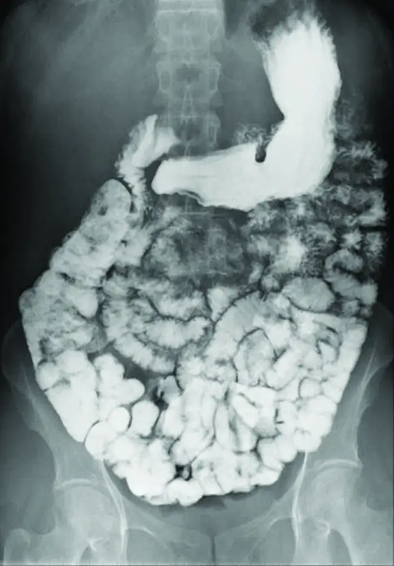
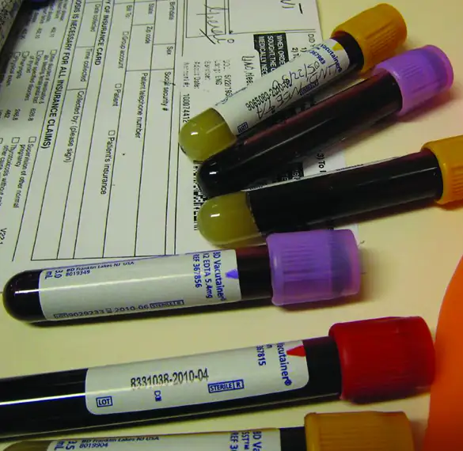
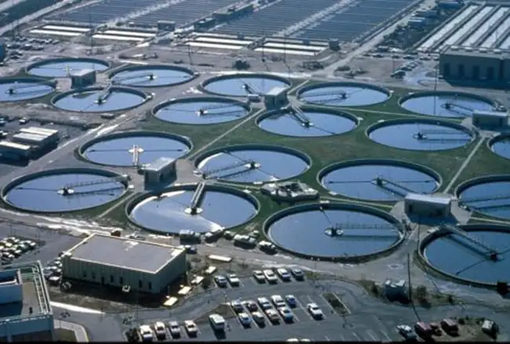
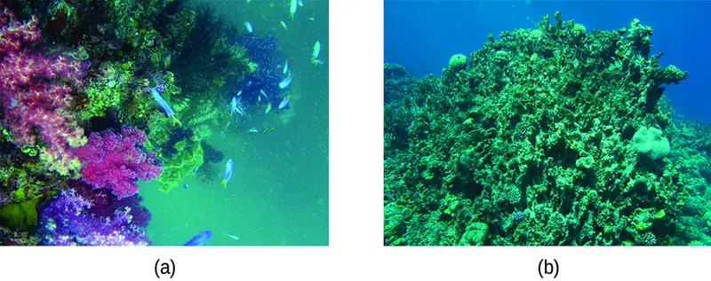
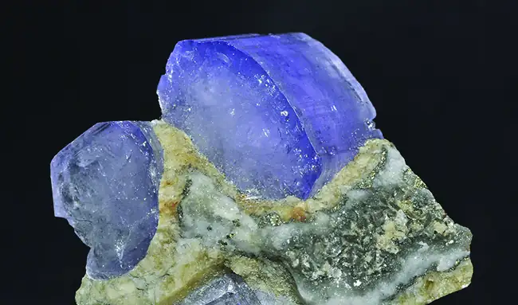
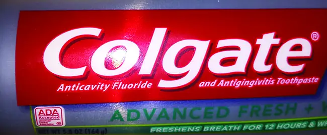
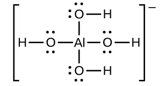

Chapter 15: Equilibria of Other Reaction Classes¶
Introduction¶
Learning Objectives
- Precipitation and Dissolution
- Lewis Acids and Bases
- Multiple Equilibria
![An image is shown of a cluster of clear crystals, showing primarily cubic and some octahedral shapes. A large cubic crystal at the center of the photograph has a deep emerald green center with deep purple corners and a small royal blue region just right of center. A smaller cubic crystal to its left shows purple corners and edges with royal blue coloration toward the center. Similar coloration is seen in other crystals in the structure, though most of the smaller crystals are clear and colorless.](img/cnx-chem-15-00-fluorite.webp)
The mineral fluorite, CaF2 Figure 15.1, is commonly used as a semiprecious stone in many types of jewelry because of its striking appearance. Deposits of fluorite are formed through a process called hydrothermal precipitation in which calcium and fluoride ions dissolved in groundwater combine to produce insoluble CaF2 in response to some change in solution conditions. For example, a decrease in temperature may trigger fluorite precipitation if its solubility is exceeded at the lower temperature. Because fluoride ion is a weak base, its solubility is also affected by solution pH, and so geologic or other processes that change groundwater pH will also affect the precipitation of fluorite. This chapter extends the equilibrium discussion of other chapters by addressing some additional reaction classes (including precipitation) and systems involving coupled equilibrium reactions.
15.1 Precipitation and Dissolution¶
Learning Objectives
By the end of this section, you will be able to:
- Write chemical equations and equilibrium expressions representing solubility equilibria
- Carry out equilibrium computations involving solubility, equilibrium expressions, and solute concentrations
Solubility equilibria are established when the dissolution and precipitation of a solute species occur at equal rates. These equilibria underlie many natural and technological processes, ranging from tooth decay to water purification. An understanding of the factors affecting compound solubility is, therefore, essential to the effective management of these processes. This section applies previously introduced equilibrium concepts and tools to systems involving dissolution and precipitation.
The Solubility Product¶
Recall from the chapter on solutions that the solubility of a substance can vary from essentially zero (insoluble or sparingly soluble) to infinity (miscible). A solute with finite solubility can yield a saturated solution when it is added to a solvent in an amount exceeding its solubility, resulting in a heterogeneous mixture of the saturated solution and the excess, undissolved solute. For example, a saturated solution of silver chloride is one in which the equilibrium shown below has been established.
In this solution, an excess of solid AgCl dissolves and dissociates to produce aqueous Ag+ and Cl– ions at the same rate that these aqueous ions combine and precipitate to form solid AgCl (Figure 15.2). Because silver chloride is a sparingly soluble salt, the equilibrium concentration of its dissolved ions in the solution is relatively low.
![Two beakers are shown with a bidirectional arrow between them. Both beakers are just over half filled with a clear, colorless liquid. The beaker on the left shows a cubic structure composed of alternating green and slightly larger grey spheres. Evenly distributed in the region outside, 11 space filling models are shown. These are each composed of a central red sphere with two smaller white spheres attached in a bent arrangement. In the beaker on the right, the green and grey spheres are no longer connected in a cubic structure. Nine green spheres, 10 grey spheres, and 11 red and white molecules are evenly mixed and distributed throughout the liquid in the beaker.](img/cnx-chem-15-01-agcl.webp)
The equilibrium constant for solubility equilibria such as this one is called the solubility product constant, Ksp, in this case
Recall that only gases and solutes are represented in equilibrium constant expressions, so the Ksp does not include a term for the undissolved AgCl. A listing of solubility product constants for several sparingly soluble compounds is provided in Appendix J.
Example 15.1 Writing Equations and Solubility Products
Write the dissolution equation and the solubility product expression for each of the following slightly soluble ionic compounds:
(a) AgI, silver iodide, a solid with antiseptic properties
(b) CaCO3, calcium carbonate, the active ingredient in many over-the-counter chewable antacids
(c) Mg(OH)2, magnesium hydroxide, the active ingredient in Milk of Magnesia
(d) Mg(NH4)PO4, magnesium ammonium phosphate, an essentially insoluble substance used in tests for magnesium
(e) Ca5(PO4)3OH, the mineral apatite, a source of phosphate for fertilizers
Solution
\(\begin{array}{ccccc} (\text{a})\:\text{AgI}(s)\rightleftharpoons\text{Ag}^{\text{+}}(aq)+\text{I}^{-}(aq) & & K_{\text{sp}} & = & {[\text{Ag}}^{\text{+}}][\text{I}^{-}] \\ (\text{b})\:\text{CaCO}_{3}(s)\rightleftharpoons\text{Ca}^{\text{2+}}(aq)+\text{CO}_{3}{}^{\text{2−}}(aq) & & K_{\text{sp}} & = & [\text{Ca}^{\text{2+}}{][\text{CO}}_{3}{}^{\text{2−}}] \\ (\text{c})\:{\text{Mg}(\text{OH})}_{2}(s)\rightleftharpoons\text{Mg}^{\text{2+}}(aq)+\text{2OH}^{-}(aq) & & K_{\text{sp}} & = & [\text{Mg}^{\text{2+}}]{[\text{OH}^{-}]}^{2} \\ (\text{d})\:\text{Mg}(\text{NH}_{4})\text{PO}_{4}(s)\rightleftharpoons\text{Mg}^{\text{2+}}(aq)+\text{NH}_{4}{}^{\text{+}}(aq)+\text{PO}_{4}{}^{\text{3−}}(aq) & & K_{\text{sp}} & = & [\text{Mg}^{\text{2+}}{][\text{NH}}_{4}{}^{\text{+}}]{[\text{PO}}_{4}{}^{\text{3−}}] \\ (\text{e})\:\text{Ca}_{5}(\text{PO}_{4})3\text{OH}(s)\rightleftharpoons\text{5Ca}^{\text{2+}}(aq)+\text{3PO}_{4}{}^{\text{3−}}(aq)+\text{OH}^{-}(aq) & & K_{\text{sp}} & = & {{[\text{Ca}}^{\text{2+}}]}^{5}[\text{P}\text{O}_{4}{}^{\text{3−}}{]}^{3}[\text{OH}^{-}] \end{array}\)
Check Your Learning
Write the dissolution equation and the solubility product for each of the following slightly soluble compounds:
(a) BaSO4
(b) Ag2SO4
(c) Al(OH)3
(d) Pb(OH)Cl
Answer:
\(\begin{array}{ccccc} (\text{a})\:\text{BaSO}_{4}(s)\rightleftharpoons\text{Ba}^{\text{2+}}(aq)+\text{SO}_{4}{}^{\text{2−}}(aq) & & K_{\text{sp}} & = & [\text{Ba}^{\text{2+}}{][\text{SO}}_{4}{{}^{2}}^{-}]; \\ (\text{b})\:\text{Ag}_{2}\text{SO}_{4}(s)\rightleftharpoons\text{2Ag}^{\text{+}}(aq)+\text{SO}_{4}{}^{\text{2−}}(aq) & & K_{\text{sp}} & = & {[\text{Ag}^{\text{+}}]}^{2}[\text{SO}_{4}{}^{\text{2−}}]; \\ (\text{c})\:{\text{Al}(\text{OH})}_{3}(s)\rightleftharpoons\text{Al}^{\text{3+}}(aq)+\text{3OH}^{-}(aq) & & K_{\text{sp}} & = & [\text{Al}^{\text{3+}}]{[\text{OH}}^{-}{]}^{3}; \\ (\text{d})\:\text{Pb(OH)Cl(}s)\rightleftharpoons\text{Pb}^{\text{2+}}(aq)+\text{OH}^{-}(aq)+\text{Cl}^{-}(aq) & & K_{\text{sp}} & = & [\text{Pb}^{\text{2+}}]{[\text{OH}}^{-}][\text{Cl}^{-}] \end{array}\)
Ksp and Solubility¶
The Ksp of a slightly soluble ionic compound may be simply related to its measured solubility provided the dissolution process involves only dissociation and solvation, for example:
For cases such as these, one may derive Ksp values from provided solubilities, or vice-versa. Calculations of this sort are most conveniently performed using a compound’s molar solubility, measured as moles of dissolved solute per liter of saturated solution.
Example 15.2 Calculation of Ksp from Equilibrium Concentrations
Fluorite, CaF2, is a slightly soluble solid that dissolves according to the equation:
The concentration of Ca2+ in a saturated solution of CaF2 is 2.15 \(\times\) 10–4 M. What is the solubility product of fluorite?
Solution
According to the stoichiometry of the dissolution equation, the fluoride ion molarity of a CaF2 solution is equal to twice its calcium ion molarity:
Substituting the ion concentrations into the Ksp expression gives
Check Your Learning
In a saturated solution of Mg(OH)2, the concentration of Mg2+ is 1.31 \(\times\) 10–4 M. What is the solubility product for Mg(OH)2?
Answer:
8.99 \(\times\) 10–12
Example 15.3 Determination of Molar Solubility from Ksp
The Ksp of copper(I) bromide, CuBr, is 6.3 \(\times\) 10–9. Calculate the molar solubility of copper bromide.
Solution
The dissolution equation and solubility product expression are
Following the ICE approach to this calculation yields the table
![This table has two main columns and four rows. The first row for the first column does not have a heading and then has the following in the first column: Initial concentration ( M ), Change ( M ), and Equilibrium concentration ( M ). The second column has the header of, “C u B r equilibrium arrow C u superscript positive sign plus B r superscript negative sign.” Under the second column is a subgroup of three rows and three columns. The first column is blank. The second column has the following: 0, positive x, x. The third column has the following 0, positive x, x.](img/cnx-chem-15-01-icetable1-img.webp)
Substituting the equilibrium concentration terms into the solubility product expression and solving for x yields
Since the dissolution stoichiometry shows one mole of copper(I) ion and one mole of bromide ion are produced for each moles of Br dissolved, the molar solubility of CuBr is 7.9 \(\times\) 10–5 M.
Check Your Learning
The Ksp of AgI is 1.5 \(\times\) 10–16. Calculate the molar solubility of silver iodide.
Answer:
1.2 \(\times\) 10–8 M
Example 15.4 Determination of Molar Solubility from Ksp
The Ksp of calcium hydroxide, Ca(OH)2, is 1.3 \(\times\) 10–6. Calculate the molar solubility of calcium hydroxide.
Solution
The dissolution equation and solubility product expression are
The ICE table for this system is
![This table has two main columns and four rows. The first row for the first column does not have a heading and then has the following in the first column: Initial concentration ( M ), Change ( M ), and Equilibrium concentration ( M ). The second column has the header of, “C a ( O H ) subscript 2 equilibrium arrow C a superscript 2 positive sign plus 2 O H superscript negative sign.” Under the second column is a subgroup of three rows and three columns. The first column is blank. The second column has the following: 0, positive x, x. The third column has the following 0, positive 2 x, 2 x.](img/cnx-chem-15-01-icetable7-img.webp)
Substituting terms for the equilibrium concentrations into the solubility product expression and solving for x gives
As defined in the ICE table, x is the molarity of calcium ion in the saturated solution. The dissolution stoichiometry shows a 1:1 relation between moles of calcium ion in solution and moles of compound dissolved, and so, the molar solubility of Ca(OH)2 is 6.9 \(\times\) 10–3 M.
Check Your Learning
The Ksp of PbI2 is 1.4 \(\times\) 10–8. Calculate the molar solubility of lead(II) iodide.
Answer:
1.5 \(\times\) 10–3 M
Example 15.5 Determination of Ksp from Gram Solubility
Many of the pigments used by artists in oil-based paints (Figure 15.3) are sparingly soluble in water. For example, the solubility of the artist’s pigment chrome yellow, PbCrO4, is 4.6 \(\times\) 10–6 g/L. Determine the solubility product for PbCrO4.
Solution
Before calculating the solubility product, the provided solubility must be converted to molarity:
The dissolution equation for this compound is
The dissolution stoichiometry shows a 1:1 relation between the molar amounts of compound and its two ions, and so both [Pb2+] and \([\text{CrO}_{4}{}^{\text{2−}}]\) are equal to the molar solubility of PbCrO4:
Ksp = [Pb2+]\([\text{CrO}_{4}{}^{\text{2−}}]\) = (1.4 \(\times\) 10–8)(1.4 \(\times\) 10–8) = 2.0 \(\times\) 10–16
Check Your Learning
The solubility of TlCl [thallium(I) chloride], an intermediate formed when thallium is being isolated from ores, is 3.12 grams per liter at 20 °C. What is its solubility product?
Answer:
1.69 \(\times\) 10–4
Example 15.6 Calculating the Solubility of Hg2Cl2
Calomel, Hg2Cl2, is a compound composed of the diatomic ion of mercury(I), \(\text{Hg}_{2}{}^{\text{2+}},\) and chloride ions, Cl–. Although most mercury compounds are now known to be poisonous, eighteenth-century physicians used calomel as a medication. Their patients rarely suffered any mercury poisoning from the treatments because calomel has a very low solubility, as suggested by its very small Ksp:
Calculate the molar solubility of Hg2Cl2.
Solution
The dissolution stoichiometry shows a 1:1 relation between the amount of compound dissolved and the amount of mercury(I) ions, and so the molar solubility of Hg2Cl2 is equal to the concentration of \(\text{Hg}_{2}{}^{\text{2+}}\) ions
Following the ICE approach results in
![This table has two main columns and four rows. The first row for the first column does not have a heading and then has the following in the first column: Initial concentration ( M ), Change ( M ), Equilibrium concentration ( M ). The second column has the header of, “H g subscript 2 C l subscript 2 equilibrium arrow H g subscript 2 superscript 2 positive sign plus 2 C l superscript negative sign.” Under the second column is a subgroup of three rows and three columns. The first column is blank. The second column has the following: 0, positive x, x. The third column has the following: 0, positive 2 x, 2 x.](img/cnx-chem-15-01-icetable2-img.webp)
Substituting the equilibrium concentration terms into the solubility product expression and solving for x gives
The dissolution stoichiometry shows the molar solubility of Hg2Cl2 is equal to \([\text{Hg}_{2}{}^{\text{2+}}],\) or 6.5 \(\times\) 10–7 M.
Check Your Learning
Determine the molar solubility of MgF2 from its solubility product: Ksp = 6.4 \(\times\) 10–9.
Answer:
1.2 \(\times\) 10–3 M
How Sciences Interconnect: Using Barium Sulfate for Medical Imaging
Various types of medical imaging techniques are used to aid diagnoses of illnesses in a noninvasive manner. One such technique utilizes the ingestion of a barium compound before taking an X-ray image. A suspension of barium sulfate, a chalky powder, is ingested by the patient. Since the Ksp of barium sulfate is 10.08 \(\times\) 10–10, very little of it dissolves as it coats the lining of the patient’s intestinal tract. Barium-coated areas of the digestive tract then appear on an X-ray as white, allowing for greater visual detail than a traditional X-ray (Figure 15.4).

Medical imaging using barium sulfate can be used to diagnose acid reflux disease, Crohn’s disease, and ulcers in addition to other conditions.
Visit this website for more information on how barium is used in medical diagnoses and which conditions it is used to diagnose.
Predicting Precipitation¶
The equation that describes the equilibrium between solid calcium carbonate and its solvated ions is:
It is important to realize that this equilibrium is established in any aqueous solution containing Ca2+ and CO32– ions, not just in a solution formed by saturating water with calcium carbonate. Consider, for example, mixing aqueous solutions of the soluble compounds sodium carbonate and calcium nitrate. If the concentrations of calcium and carbonate ions in the mixture do not yield a reaction quotient, Qsp, that exceeds the solubility product, Ksp, then no precipitation will occur. If the ion concentrations yield a reaction quotient greater than the solubility product, then precipitation will occur, lowering those concentrations until equilibrium is established (Qsp = Ksp). The comparison of Qsp to Ksp to predict precipitation is an example of the general approach to predicting the direction of a reaction first introduced in the chapter on equilibrium. For the specific case of solubility equilibria:
Qsp < Ksp: the reaction proceeds in the forward direction (solution is not saturated; no precipitation observed)
Qsp > Ksp: the reaction proceeds in the reverse direction (solution is supersaturated; precipitation will occur)
This predictive strategy and related calculations are demonstrated in the next few example exercises.
Example 15.7 Precipitation of Mg(OH)2
The first step in the preparation of magnesium metal is the precipitation of Mg(OH)2 from sea water by the addition of lime, Ca(OH)2, a readily available inexpensive source of OH– ion:
The concentration of Mg2+(aq) in sea water is 0.0537 M. Will Mg(OH)2 precipitate when enough Ca(OH)2 is added to give a [OH–] of 0.0010 M?
Solution
Calculation of the reaction quotient under these conditions is shown here:
Because Q is greater than Ksp (Q = 5.4 \(\times\) 10–8 is larger than Ksp = 8.9 \(\times\) 10–12), the reverse reaction will proceed, precipitating magnesium hydroxide until the dissolved ion concentrations have been sufficiently lowered, so that Qsp = Ksp.
Check Your Learning
Predict whether CaHPO4 will precipitate from a solution with [Ca2+] = 0.0001 M and \([\text{HPO}_{4}{}^{\text{2−}}]\) = 0.001 M.
Answer:
No precipitation of CaHPO4; Q = 1 \(\times\) 10–7, which is less than Ksp (7 × 10–7)
Example 15.8 Precipitation of AgCl
Does silver chloride precipitate when equal volumes of a 2.0 \(\times\) 10–4-M solution of AgNO3 and a 2.0 \(\times\) 10–4-M solution of NaCl are mixed?
Solution
The equation for the equilibrium between solid silver chloride, silver ion, and chloride ion is:
The solubility product is 1.6 \(\times\) 10–10 (see Appendix J).
AgCl will precipitate if the reaction quotient calculated from the concentrations in the mixture of AgNO3 and NaCl is greater than Ksp. Because the volume doubles when equal volumes of AgNO3 and NaCl solutions are mixed, each concentration is reduced to half its initial value
The reaction quotient, Q, is greater than Ksp for AgCl, so a supersaturated solution is formed:
AgCl will precipitate from the mixture until the dissolution equilibrium is established, with Q equal to Ksp.
Check Your Learning
Will KClO4 precipitate when 20 mL of a 0.050-M solution of K+ is added to 80 mL of a 0.50-M solution of \(\text{ClO}_{4}{}^{-}?\) (Hint: Use the dilution equation to calculate the concentrations of potassium and perchlorate ions in the mixture.)
Answer:
No, Q = 4.0 \(\times\) 10–3, which is less than Ksp = 1.05 \(\times\) 10–2
Example 15.9 Precipitation of Calcium Oxalate
Blood will not clot if calcium ions are removed from its plasma. Some blood collection tubes contain salts of the oxalate ion, \(\text{C}_{2}\text{O}_{4}{}^{\text{2−}},\) for this purpose (Figure 15.5). At sufficiently high concentrations, the calcium and oxalate ions form solid, CaC2O4·H2O (calcium oxalate monohydrate). The concentration of Ca2+ in a sample of blood serum is 2.2 \(\times\) 10–3 M. What concentration of \(\text{C}_{2}\text{O}_{4}{}^{\text{2−}}\) ion must be established before CaC2O4·H2O begins to precipitate?

Solution
The equilibrium expression is:
For this reaction:
(see Appendix J)
Substitute the provided calcium ion concentration into the solubility product expression and solve for oxalate concentration:
A concentration of \([\text{C}_{2}\text{O}_{4}{}^{\text{2−}}]\) = 8.9 \(\times\) 10–7 M is necessary to initiate the precipitation of CaC2O4 under these conditions.
Check Your Learning
If a solution contains 0.0020 mol of \(\text{CrO}_{4}{}^{\text{2−}}\) per liter, what concentration of Ag+ ion must be reached by adding solid AgNO3 before Ag2CrO4 begins to precipitate? Neglect any increase in volume upon adding the solid silver nitrate.
Answer:
6.7 \(\times\) 10–5 M
Example 15.10 Concentrations Following Precipitation
Clothing washed in water that has a manganese [Mn2+(aq)] concentration exceeding 0.1 mg/L (1.8 \(\times\) 10–6 M) may be stained by the manganese upon oxidation, but the amount of Mn2+ in the water can be decreased by adding a base to precipitate Mn(OH)2. What pH is required to keep [Mn2+] equal to 1.8 \(\times\) 10–6 M?
Solution
The dissolution of Mn(OH)2 is described by the equation:
At equilibrium:
or
so
Calculate the pH from the pOH:
(final result rounded to one significant digit, limited by the certainty of the Ksp)
Check Your Learning
The first step in the preparation of magnesium metal is the precipitation of Mg(OH)2 from sea water by the addition of Ca(OH)2. The concentration of Mg2+(aq) in sea water is 5.37 \(\times\) 10–2 M. Calculate the pH at which [Mg2+] is decreased to 1.0 \(\times\) 10–5 M
Answer:
10.97
In solutions containing two or more ions that may form insoluble compounds with the same counter ion, an experimental strategy called selective precipitation may be used to remove individual ions from solution. By increasing the counter ion concentration in a controlled manner, ions in solution may be precipitated individually, assuming their compound solubilities are adequately different. In solutions with equal concentrations of target ions, the ion forming the least soluble compound will precipitate first (at the lowest concentration of counter ion), with the other ions subsequently precipitating as their compound’s solubilities are reached. As an illustration of this technique, the next example exercise describes separation of a two halide ions via precipitation of one as a silver salt.
Chemistry in Everyday Life: The Role of Precipitation in Wastewater Treatment
Solubility equilibria are useful tools in the treatment of wastewater carried out in facilities that may treat the municipal water in your city or town (Figure 15.6). Specifically, selective precipitation is used to remove contaminants from wastewater before it is released back into natural bodies of water. For example, phosphate ions \(\text{(PO}_{4}{}^{\text{3−}})\) are often present in the water discharged from manufacturing facilities. An abundance of phosphate causes excess algae to grow, which impacts the amount of oxygen available for marine life as well as making water unsuitable for human consumption.

One common way to remove phosphates from water is by the addition of calcium hydroxide, or lime, Ca(OH)2. As the water is made more basic, the calcium ions react with phosphate ions to produce hydroxylapatite, Ca5(PO4)3OH, which then precipitates out of the solution:
Because the amount of calcium ion added does not result in exceeding the solubility products for other calcium salts, the anions of those salts remain behind in the wastewater. The precipitate is then removed by filtration and the water is brought back to a neutral pH by the addition of CO2 in a recarbonation process. Other chemicals can also be used for the removal of phosphates by precipitation, including iron(III) chloride and aluminum sulfate.
View this site for more information on how phosphorus is removed from wastewater.
Example 15.11 Precipitation of Silver Halides
A solution contains 0.00010 mol of KBr and 0.10 mol of KCl per liter. AgNO3 is gradually added to this solution. Which forms first, solid AgBr or solid AgCl?
Solution
The two equilibria involved are:
If the solution contained about equal concentrations of Cl– and Br–, then the silver salt with the smaller Ksp (AgBr) would precipitate first. The concentrations are not equal, however, so the [Ag+] at which AgCl begins to precipitate and the [Ag+] at which AgBr begins to precipitate must be calculated. The salt that forms at the lower [Ag+] precipitates first.
AgBr precipitates when Q equals Ksp for AgBr
AgBr begins to precipitate when [Ag+] is 5.0 \(\times\) 10–9 M.
For AgCl: AgCl precipitates when Q equals Ksp for AgCl (1.6 \(\times\) 10–10). When [Cl–] = 0.10 M:
AgCl begins to precipitate when [Ag+] is 1.6 \(\times\) 10–9 M.
AgCl begins to precipitate at a lower [Ag+] than AgBr, so AgCl begins to precipitate first. Note the chloride ion concentration of the initial mixture was significantly greater than the bromide ion concentration, and so silver chloride precipitated first despite having a Ksp greater than that of silver bromide.
Check Your Learning
If silver nitrate solution is added to a solution which is 0.050 M in both Cl– and Br– ions, at what [Ag+] would precipitation begin, and what would be the formula of the precipitate?
Answer:
[Ag+] = 1.0 \(\times\) 10–11 M; AgBr precipitates first
Common Ion Effect¶
Compared with pure water, the solubility of an ionic compound is less in aqueous solutions containing a common ion (one also produced by dissolution of the ionic compound). This is an example of a phenomenon known as the common ion effect, which is a consequence of the law of mass action that may be explained using Le ChÂtelier’s principle. Consider the dissolution of silver iodide:
This solubility equilibrium may be shifted left by the addition of either silver(I) or iodide ions, resulting in the precipitation of AgI and lowered concentrations of dissolved Ag+ and I–. In solutions that already contain either of these ions, less AgI may be dissolved than in solutions without these ions.
This effect may also be explained in terms of mass action as represented in the solubility product expression:
The mathematical product of silver(I) and iodide ion molarities is constant in an equilibrium mixture regardless of the source of the ions, and so an increase in one ion’s concentration must be balanced by a proportional decrease in the other.
Link to Learning
View this simulation to explore various aspects of the common ion effect.
Example 15.12 Common Ion Effect on Solubility
What is the effect on the amount of solid Mg(OH)2 and the concentrations of Mg2+ and OH– when each of the following are added to a saturated solution of Mg(OH)2?
(a) MgCl2
(b) KOH
(c) NaNO3
(d) Mg(OH)2
Solution
The solubility equilibrium is
(a) Adding a common ion, Mg2+, will increase the concentration of this ion and shift the solubility equilibrium to the left, decreasing the concentration of hydroxide ion and increasing the amount of undissolved magnesium hydroxide.
(b) Adding a common ion, OH–, will increase the concentration of this ion and shift the solubility equilibrium to the left, decreasing the concentration of magnesium ion and increasing the amount of undissolved magnesium hydroxide.
(c) The added compound does not contain a common ion, and no effect on the magnesium hydroxide solubility equilibrium is expected.
(d) Adding more solid magnesium hydroxide will increase the amount of undissolved compound in the mixture. The solution is already saturated, though, so the concentrations of dissolved magnesium and hydroxide ions will remain the same.
Thus, changing the amount of solid magnesium hydroxide in the mixture has no effect on the value of Q, and no shift is required to restore Q to the value of the equilibrium constant.
Check Your Learning
What is the effect on the amount of solid NiCO3 and the concentrations of Ni2+ and \(\text{CO}_{3}{}^{\text{2−}}\) when each of the following are added to a saturated solution of NiCO3
(a) Ni(NO3)2
(b) KClO4
(c) NiCO3
(d) K2CO3
Answer:
(a) mass of NiCO3(s) increases, [Ni2+] increases, \([\text{CO}_{3}{}^{\text{2−}}]\) decreases; (b) no appreciable effect; (c) no effect except to increase the amount of solid NiCO3; (d) mass of NiCO3(s) increases, [Ni2+] decreases, \([\text{CO}_{3}{}^{\text{2−}}]\) increases;
Example 15.13 Common Ion Effect
Calculate the molar solubility of cadmium sulfide (CdS) in a 0.010-M solution of cadmium bromide (CdBr2). The Ksp of CdS is 1.0 \(\times\) 10–28.
Solution
This calculation can be performed using the ICE approach:
![This table has two main columns and four rows. The first row for the first column does not have a heading and then has the following in the first column: Initial concentration ( M ), Change ( M ), and Equilibrium concentration ( M ). The second column has the header, “C d S equilibrium arrow C d to the second power plus S to the second power superscript negative sign.” Under the second column is a subgroup of three rows and three columns. The first column is blank. The second column has the following: 0.010, positive x, 0.010 plus x. The third column has the following: 0, positive x, x.](img/cnx-chem-15-01-icetable3-img.webp)
Because Ksp is very small, assume x << 0.010 and solve the simplified equation for x:
The molar solubility of CdS in this solution is 1.0 \(\times\) 10–26 M.
Check Your Learning
Calculate the molar solubility of aluminum hydroxide, Al(OH)3, in a 0.015-M solution of aluminum nitrate, Al(NO3)3. The Ksp of Al(OH)3 is 2 \(\times\) 10–32.
Answer:
4 \(\times\) 10–11 M
15.2 Lewis Acids and Bases¶
Learning Objectives
By the end of this section, you will be able to:
- Explain the Lewis model of acid-base chemistry
- Write equations for the formation of adducts and complex ions
- Perform equilibrium calculations involving formation constants
In 1923, G. N. Lewis proposed a generalized definition of acid-base behavior in which acids and bases are identified by their ability to accept or to donate a pair of electrons and form a coordinate covalent bond.
A coordinate covalent bond (or dative bond) occurs when one of the atoms in the bond provides both bonding electrons. For example, a coordinate covalent bond occurs when a water molecule combines with a hydrogen ion to form a hydronium ion. A coordinate covalent bond also results when an ammonia molecule combines with a hydrogen ion to form an ammonium ion. Both of these equations are shown here.
![This figure shows two reactions represented with Lewis structures. The first shows an O atom bonded to two H atoms. The O atom has two lone pairs of electrons. There is a plus sign and then an H atom with a superscript positive sign followed by a right-facing arrow. The next Lewis structure is in brackets and shows an O atom bonded to three H atoms. There is one lone pair of electrons on the O atom. Outside of the brackets is a superscript positive sign. The second reaction shows an N atom bonded to three H atoms. The N atom has one lone pair of electrons. There is a plus sign and then an H superscript positive sign. After the H superscript positive sign is a right-facing arrow. The next Lewis structure is in brackets. It shows an N atom bonded to four H atoms. There is a superscript positive sign outside the brackets.](img/cnx-chem-15-03-hydronium-img.webp)
Reactions involving the formation of coordinate covalent bonds are classified as Lewis acid-base chemistry. The species donating the electron pair that compose the bond is a Lewis base, the species accepting the electron pair is a Lewis acid, and the product of the reaction is a Lewis acid-base adduct. As the two examples above illustrate, Brønsted-Lowry acid-base reactions represent a subcategory of Lewis acid reactions, specifically, those in which the acid species is H+. A few examples involving other Lewis acids and bases are described below.
The boron atom in boron trifluoride, BF3, has only six electrons in its valence shell. Being short of the preferred octet, BF3 is a very good Lewis acid and reacts with many Lewis bases; a fluoride ion is the Lewis base in this reaction, donating one of its lone pairs:
![This figure illustrates a chemical reaction using structural formulas. On the left, an F atom is surrounded by four electron dot pairs and has a superscript negative symbol. This structure is labeled below as “Lewis base.” Following a plus sign is another structure which has a B atom at the center and three F atoms single bonded above, right, and below. Each F atom has three pairs of electron dots. This structure is labeled below as “Lewis acid.” Following a right pointing arrow is a structure in brackets that has a central B atom to which 4 F atoms are connected with single bonds above, below, to the left, and to the right. Each F atom in this structure has three pairs of electron dots. Outside the brackets is a superscript negative symbol. This structure is labeled below as “Acid-base adduct.”](img/cnx-chem-15-02-bf3-la-img.webp)
In the following reaction, each of two ammonia molecules, Lewis bases, donates a pair of electrons to a silver ion, the Lewis acid:
![This figure illustrates a chemical reaction using structural formulas. On the left side, a 2 preceeds an N atom which has H atoms single bonded above, to the left, and below. A single electron dot pair is on the right side of the N atom. This structure is labeled below as “Lewis base.” Following a plus sign is an A g atom which has a superscript plus symbol. Following a right pointing arrow is a structure in brackets that has a central A g atom to which N atoms are connected with single bonds to the left and to the right. Each of these N atoms has H atoms bonded above, below, and to the outside of the structure. Outside the brackets is a superscript plus symbol. This structure is labeled below as “Acid-base adduct.”](img/cnx-chem-15-02-nh3-lbase-img.webp)
Nonmetal oxides act as Lewis acids and react with oxide ions, Lewis bases, to form oxyanions:
![This figure illustrates a chemical reaction using structural formulas. On the left, an O atom is surrounded by four electron dot pairs and has a superscript 2 negative. This structure is labeled below as “Lewis base.” Following a plus sign is another structure which has an S atom at the center. O atoms are single bonded above and below. These O atoms have three electron dot pairs each. To the right of the S atom is a double bonded O atom which has two pairs of electron dots. This structure is labeled below as “Lewis acid.” Following a right pointing arrow is a structure in brackets that has a central S atom to which 4 O atoms are connected with single bonds above, below, to the left, and to the right. Each of the O atoms has three pairs of electron dots. Outside the brackets is a superscript 2 negative. This structure is labeled below as “Acid-base adduct.”](img/cnx-chem-15-02-nonmetalox-img.webp)
Many Lewis acid-base reactions are displacement reactions in which one Lewis base displaces another Lewis base from an acid-base adduct, or in which one Lewis acid displaces another Lewis acid:
![Two chemical reactions in two rows using structural formulas. First row, to the left, in brackets is a structure with a central A g atom to which N atoms are connected with single bonds to the left and right. Each N atom has H atoms bonded above, below, and to the outside. Outside the brackets is a superscript plus symbol. This structure is labeled “Acid-base adduct.” Following a plus sign is a 2 and another structure in brackets that shows a C atom triple bonded to an N atom. The C atom has an unshared electron pair on its left side and the N atom has an unshared pair on its right side. Outside the brackets to the right is a superscript negative symbol. This structure is labeled “Base.” Following a right pointing arrow is a structure in brackets with a central A g atom to which 4 FC atoms are connected with single bonds to the left and right. At each of the two ends, N atoms are triple bonded to the C atoms. The N atoms each have an unshared electron pair at the end of the structure. Outside the brackets is a superscript negative symbol. This structure is labeled “New adduct.” Following a plus sign is an N atom with H atoms single bonded above, to the left, and below. A single electron dot pair is on the left side of the N atom. This structure is labeled “New base.” In the second row, on the left side in brackets is a structure with a central C atom. O atoms, each with three unshared electron pairs, are single bonded above and below and a third O atom, with two unshared electron pairs, is double bonded to the right. Outside the brackets is a superscript 2 negative. This structure is labeled “Acid-base adduct.” Following a plus sign is another structure with an S atom at the center. O atoms are single bonded above and below. These O atoms have three electron dot pairs each. To the right of the S atom is a double bonded O atom which has two pairs of electron dots. This structure is labeled “Acid.” Following a right pointing arrow is a structure in brackets with a central S atom to which 4 O atoms are connected with single bonds above, below, left, and right. Each of the O atoms has three pairs of electron dots. Outside the brackets is a superscript 2 negative. This structure is labeled “New adduct.” Following a plus sign is a structure with a central C atom that has two O atoms, each with two unshared electron pairs, double bonded to the left and right.](img/cnx-chem-15-02-displace-img.webp)
Another type of Lewis acid-base chemistry involves the formation of a complex ion (or a coordination complex) comprising a central atom, typically a transition metal cation, surrounded by ions or molecules called ligands. These ligands can be neutral molecules like H2O or NH3, or ions such as CN– or OH–. Often, the ligands act as Lewis bases, donating a pair of electrons to the central atom. These types of Lewis acid-base reactions are examples of a broad subdiscipline called coordination chemistry—the topic of another chapter in this text.
The equilibrium constant for the reaction of a metal ion with one or more ligands to form a coordination complex is called a formation constant (Kf) (sometimes called a stability constant). For example, the complex ion \(\text{Cu}{(\text{CN})}_{2}{}^{-}\)
is produced by the reaction
The formation constant for this reaction is
Alternatively, the reverse reaction (decomposition of the complex ion) can be considered, in which case the equilibrium constant is a dissociation constant (Kd). Per the relation between equilibrium constants for reciprocal reactions described, the dissociation constant is the mathematical inverse of the formation constant, Kd = Kf–1. A tabulation of formation constants is provided in Appendix K.
As an example of dissolution by complex ion formation, let us consider what happens when we add aqueous ammonia to a mixture of silver chloride and water. Silver chloride dissolves slightly in water, giving a small concentration of Ag+ ([Ag+] = 1.3 \(\times\) 10–5 M):
However, if NH3 is present in the water, the complex ion, \(\text{Ag}{(\text{NH}_{3})}_{2}{}^{+},\) can form according to the equation:
with
The large size of this formation constant indicates that most of the free silver ions produced by the dissolution of AgCl combine with NH 3 to form \(\text{Ag}{(\text{NH}_{3})}_{2}{}^{+}.\) As a consequence, the concentration of silver ions, [Ag + ], is reduced, and the reaction quotient for the dissolution of silver chloride, [Ag + ][Cl – ], falls below the solubility product of AgCl:
More silver chloride then dissolves. If the concentration of ammonia is great enough, all of the silver chloride dissolves.
Example 15.14 Dissociation of a Complex Ion
Calculate the concentration of the silver ion in a solution that initially is 0.10 M with respect to \(\text{Ag}{(\text{NH}_{3})}_{2}{}^{+}.\)
Solution
Applying the standard ICE approach to this reaction yields the following:
![This table has two main columns and four rows. The first row for the first column does not have a heading and then has the following in the first column: Initial concentration ( M ), Change ( M ), and Equilibrium concentration ( M ). The second column has the header, “A g superscript positive sign plus 2 N H subscript 3 equilibrium sign A g ( N H subscript 3 ) subscript 2 superscript positive sign.” Under the second column is a subgroup of three rows and three columns. The first column contains: 0, positive x, x. The second column contains: 0, positive 2 x, 2 x. The third column contains 0.10, negative x, and 0.10 minus x.](img/cnx-chem-15-02-icetable1-img.webp)
Substituting these equilibrium concentration terms into the Kf expression gives
The very large equilibrium constant means the amount of the complex ion that will dissociate, x, will be very small. Assuming x << 0.1 permits simplifying the above equation:
Because only 1.1% of the \(\text{Ag}{(\text{NH}_{3})}_{2}{}^{+}\) dissociates into Ag+ and NH3, the assumption that x is small is justified.
Using this value of x and the relations in the above ICE table allows calculation of all species’ equilibrium concentrations:
The concentration of free silver ion in the solution is 0.0011 M.
Check Your Learning
Calculate the silver ion concentration, [Ag+], of a solution prepared by dissolving 1.00 g of AgNO3 and 10.0 g of KCN in sufficient water to make 1.00 L of solution. (Hint: Because Kf is very large, the silver/cyanide complex ion (see Appendix K), assume the reaction goes to completion and then calculate the [Ag+] produced by dissociation of the complex.)
Answer:
2.9 \(\times\) 10–22 M
15.3 Coupled Equilibria¶
Learning Objectives
By the end of this section, you will be able to:
- Describe examples of systems involving two (or more) coupled chemical equilibria
- Calculate reactant and product concentrations for coupled equilibrium systems
As discussed in preceding chapters on equilibrium, coupled equilibria involve two or more separate chemical reactions that share one or more reactants or products. This section of this chapter will address solubility equilibria coupled with acid-base and complex-formation reactions.
An environmentally relevant example illustrating the coupling of solubility and acid-base equilibria is the impact of ocean acidification on the health of the ocean’s coral reefs. These reefs are built upon skeletons of sparingly soluble calcium carbonate excreted by colonies of corals (small marine invertebrates). The relevant dissolution equilibrium is
Rising concentrations of atmospheric carbon dioxide contribute to an increased acidity of ocean waters due to the dissolution, hydrolysis, and acid ionization of carbon dioxide:
Inspection of these equilibria shows the carbonate ion is involved in the calcium carbonate dissolution and the acid hydrolysis of bicarbonate ion. Combining the dissolution equation with the reverse of the acid hydrolysis equation yields
The equilibrium constant for this net reaction is much greater than the Ksp for calcium carbonate, indicating its solubility is markedly increased in acidic solutions. As rising carbon dioxide levels in the atmosphere increase the acidity of ocean waters, the calcium carbonate skeletons of coral reefs become more prone to dissolution and subsequently less healthy (Figure 15.7).

Link to Learning
Learn more about ocean acidification and how it affects other marine creatures.
This site has detailed information about how ocean acidification specifically affects coral reefs.
The dramatic increase in solubility with increasing acidity described above for calcium carbonate is typical of salts containing basic anions (e.g., carbonate, fluoride, hydroxide, sulfide). Another familiar example is the formation of dental cavities in tooth enamel. The major mineral component of enamel is calcium hydroxyapatite (Figure 15.8), a sparingly soluble ionic compound whose dissolution equilibrium is

This compound dissolved to yield two different basic ions: triprotic phosphate ions
and monoprotic hydroxide ions:
Of the two basic productions, the hydroxide is, of course, by far the stronger base (it’s the strongest base that can exist in aqueous solution), and so it is the dominant factor providing the compound an acid-dependent solubility. Dental cavities form when the acid waste of bacteria growing on the surface of teeth hastens the dissolution of tooth enamel by reacting completely with the strong base hydroxide, shifting the hydroxyapatite solubility equilibrium to the right. Some toothpastes and mouth rinses contain added NaF or SnF2 that make enamel more acid resistant by replacing the strong base hydroxide with the weak base fluoride:
The weak base fluoride ion reacts only partially with the bacterial acid waste, resulting in a less extensive shift in the solubility equilibrium and an increased resistance to acid dissolution. See the Chemistry in Everyday Life feature on the role of fluoride in preventing tooth decay for more information.
Chemistry in Everyday Life: Role of Fluoride in Preventing Tooth Decay
As we saw previously, fluoride ions help protect our teeth by reacting with hydroxylapatite to form fluorapatite, Ca5(PO4)3F. Since it lacks a hydroxide ion, fluorapatite is more resistant to attacks by acids in our mouths and is thus less soluble, protecting our teeth. Scientists discovered that naturally fluorinated water could be beneficial to your teeth, and so it became common practice to add fluoride to drinking water. Toothpastes and mouthwashes also contain amounts of fluoride (Figure 15.9).

Unfortunately, excess fluoride can negate its advantages. Natural sources of drinking water in various parts of the world have varying concentrations of fluoride, and places where that concentration is high are prone to certain health risks when there is no other source of drinking water. The most serious side effect of excess fluoride is the bone disease, skeletal fluorosis. When excess fluoride is in the body, it can cause the joints to stiffen and the bones to thicken. It can severely impact mobility and can negatively affect the thyroid gland. Skeletal fluorosis is a condition that over 2.7 million people suffer from across the world. So while fluoride can protect our teeth from decay, the US Environmental Protection Agency sets a maximum level of 4 ppm (4 mg/L) of fluoride in drinking water in the US. Fluoride levels in water are not regulated in all countries, so fluorosis is a problem in areas with high levels of fluoride in the groundwater.
The solubility of ionic compounds may also be increased when dissolution is coupled to the formation of a complex ion. For example, aluminum hydroxide dissolves in a solution of sodium hydroxide or another strong base because of the formation of the complex ion \(\text{Al}{(\text{OH})}_{4}{}^{-}.\)

The equations for the dissolution of aluminum hydroxide, the formation of the complex ion, and the combined (net) equation are shown below. As indicated by the relatively large value of K for the net reaction, coupling complex formation with dissolution drastically increases the solubility of Al(OH)3.
Example 15.15 Increased Solubility in Acidic Solutions
Compute and compare the molar solublities for aluminum hydroxide, Al(OH)3, dissolved in (a) pure water and (b) a buffer containing 0.100 M acetic acid and 0.100 M sodium acetate.
Solution
(a) The molar solubility of aluminum hydroxide in water is computed considering the dissolution equilibrium only as demonstrated in several previous examples:
(b) The concentration of hydroxide ion of the buffered solution is conveniently calculated by the Henderson-Hasselbalch equation:
At this pH, the concentration of hydroxide ion is
The solubility of Al(OH)3 in this buffer is then calculated from its solubility product expressions:
Compared to pure water, the solubility of aluminum hydroxide in this mildly acidic buffer is approximately ten million times greater (though still relatively low).
Check Your Learning
What is the solubility of aluminum hydroxide in a buffer comprised of 0.100 M formic acid and 0.100 M sodium formate?
Answer:
0.1 M
Example 15.16 Multiple Equilibria
Unexposed silver halides are removed from photographic film when they react with sodium thiosulfate (Na2S2O3, called hypo) to form the complex ion \(\text{Ag}{(\text{S}_{2}\text{O}_{3})}_{2}{}^{\text{3−}}\) (Kf = 4.7 \(\times\) 1013).
![A chemical reaction is shown using structural formulas. On the left, A g superscript plus is followed by a plus sign, the number 2, and a structure in brackets. The structure is composed of a central S atom which has O atoms single bonded above, right, and below. A second S atom is single bonded to the left. Each of these bonded atoms has 6 dots around it. Outside the brackets is a superscript 2 negative. Following a bidirectional arrow is a structure in brackets with a central A g atom. To the left and right, S atoms are single bonded to the A g atom. Each of these S atoms has four dots around it, and an S atom connected with a single bond moving out from the central A g atom, forming the ends of the structure. Each of these atoms has three O atoms attached with single bonds above, below, and at the end of the structure. Each O atom has six dots around it. Outside the brackets is a superscript 3 negative.](img/cnx-chem-15-03-agbr-img.webp)
What mass of Na2S2O3 is required to prepare 1.00 L of a solution that will dissolve 1.00 g of AgBr by the formation of \(\text{Ag}{(\text{S}_{2}\text{O}_{3})}_{2}{}^{\text{3−}}?\)
Solution
Two equilibria are involved when silver bromide dissolves in an aqueous thiosulfate solution containing the \(\text{S}_{2}\text{O}_{3}{}^{\text{2−}}\) ion:
dissolution: \(\text{AgBr}(s)\rightleftharpoons\text{Ag}^{\text{+}}(aq)+\text{Br}^{-}(aq)\hspace{3em}K_{\text{sp}}=5.0\:\times\:{10}^{\text{−13}}\)
complexation: \(\text{Ag}^{\text{+}}(aq)+\text{2S}_{2}\text{O}_{3}{}^{\text{2−}}(aq)\rightleftharpoons\text{Ag}{(\text{S}_{2}\text{O}_{3})}_{2}{}^{\text{3−}}(aq)\hspace{3em}K_{\text{f}}=4.7\:\times\:{10}^{13}\)
Combining these two equilibrium equations yields
\(\begin{array}{ccc} \text{AgBr}(s)+2\text{S}_{2}{\text{O}_{3}}^{2-}(\text{aq}) & \rightleftharpoons & \text{Ag}(\text{S}_{2}\text{O}_{3}{)}_{2}{}^{3-}(\text{aq})+\text{Br}^{-}(\text{aq}) \\ K=\frac{[\text{Ag}(\text{S}_{2}\text{O}_{3}{)}_{2}{}^{3-}][\text{Br}^{-}]}{[\text{S}_{2}\text{O}_{3}{}^{2-}]{}^{2}}=K_{\text{sp}}K_{\text{f}}=24 & \end{array}\)
The concentration of bromide resulting from dissolution of 1.00 g of AgBr in 1.00 L of solution is
The stoichiometry of the dissolution equilibrium indicates the same concentration of aqueous silver ion will result, 0.00532 M, and the very large value of \(K_{\text{f}}\) ensures that essentially all the dissolved silver ion will be complexed by thiosulfate ion:
Rearranging the K expression for the combined equilibrium equations and solving for the concentration of thiosulfate ion yields
Finally, the total mass of \(\text{Na}_{2}\text{S}_{2}\text{O}_{3}\) required to provide enough thiosulfate to yield the concentrations cited above can be calculated.
Mass of \(\text{Na}_{2}\text{S}_{2}\text{O}_{3}\) required to yield 0.00532 M \(\text{Ag}(\text{S}_{2}\text{O}_{2}{)}_{2}{}^{3-}\)
Mass of \(\text{Na}_{2}\text{S}_{2}\text{O}_{3}\) required to yield 0.00110 M \(\text{S}_{2}\text{O}_{3}{}^{2-}\)
The mass of \(\text{Na}_{2}\text{S}_{2}\text{O}_{3}\) required to dissolve 1.00 g of AgBr in 1.00 L of water is thus 1.68 g + 0.17 g = 1.85 g
Check Your Learning
AgCl(s), silver chloride, has a very low solubility: \(\text{AgCl}(s)\rightleftharpoons\text{Ag}^{\text{+}}(aq)+\text{Cl}^{-}(aq),\) Ksp = 1.6 \(\times\) 10–10. Adding ammonia significantly increases the solubility of AgCl because a complex ion is formed: \(\text{Ag}^{\text{+}}(aq)+2\text{NH}_{3}(aq)\rightleftharpoons\text{Ag}{(\text{NH}_{3})}_{2}{}^{+}(aq),\) Kf = 1.7 \(\times\) 107. What mass of NH3 is required to prepare 1.00 L of solution that will dissolve 2.00 g of AgCl by formation of \(\text{Ag}{(\text{NH}_{3})}_{2}{}^{\text{+}}?\)
Answer:
1.00 L of a solution prepared with 5.0 g NH3 dissolves 2.0 g of AgCl.
Chapter Review¶
Key Terms¶
- common ion effect
- effect on equilibrium when a substance with an ion in common with the dissolved species is added to the solution; causes a decrease in the solubility of an ionic species, or a decrease in the ionization of a weak acid or base
- complex ion
- ion consisting of a central atom surrounding molecules or ions called ligands via coordinate covalent bonds
- coordinate covalent bond
- (also, dative bond) covalent bond in which both electrons originated from the same atom
- coupled equilibria
- system characterized the simultaneous establishment of two or more equilibrium reactions sharing one or more reactant or product
- dissociation constant
- (Kd) equilibrium constant for the decomposition of a complex ion into its components
- formation constant
- (Kf) (also, stability constant) equilibrium constant for the formation of a complex ion from its components
- Lewis acid
- any species that can accept a pair of electrons and form a coordinate covalent bond
- Lewis acid-base adduct
- compound or ion that contains a coordinate covalent bond between a Lewis acid and a Lewis base
- Lewis acid-base chemistry
- reactions involving the formation of coordinate covalent bonds
- Lewis base
- any species that can donate a pair of electrons and form a coordinate covalent bond
- ligand
- molecule or ion acting as a Lewis base in complex ion formation; bonds to the central atom of the complex
- molar solubility
- solubility of a compound expressed in units of moles per liter (mol/L)
- selective precipitation
- process in which ions are separated using differences in their solubility with a given precipitating reagent
- solubility product constant (Ksp)
- equilibrium constant for the dissolution of an ionic compound
Key Equations¶
| \(\text{M}_{p}\text{X}_{q}(s)\rightleftharpoons p\text{M}^{\text{m+}}(aq)+q\text{X}^{\text{n−}}(aq)\hspace{3em}K_{\text{sp}}={[\text{M}}^{\text{m+}}{]}^{p}{{[\text{X}}^{\text{n−}}]}^{q}\) |
Key Concepts and Summary¶
15.1 Precipitation and Dissolution¶
The equilibrium constant for an equilibrium involving the precipitation or dissolution of a slightly soluble ionic solid is called the solubility product, Ksp, of the solid. For a heterogeneous equilibrium involving the slightly soluble solid MpXq and its ions Mm+ and Xn–:
the solubility product expression is:
The solubility product of a slightly soluble electrolyte can be calculated from its solubility; conversely, its solubility can be calculated from its Ksp, provided the only significant reaction that occurs when the solid dissolves is the formation of its ions.
A slightly soluble electrolyte begins to precipitate when the magnitude of the reaction quotient for the dissolution reaction exceeds the magnitude of the solubility product. Precipitation continues until the reaction quotient equals the solubility product.
15.2 Lewis Acids and Bases¶
A Lewis acid is a species that can accept an electron pair, whereas a Lewis base has an electron pair available for donation to a Lewis acid. Complex ions are examples of Lewis acid-base adducts and comprise central metal atoms or ions acting as Lewis acids bonded to molecules or ions called ligands that act as Lewis bases. The equilibrium constant for the reaction between a metal ion and ligands produces a complex ion called a formation constant; for the reverse reaction, it is called a dissociation constant.
15.3 Coupled Equilibria¶
Systems involving two or more chemical equilibria that share one or more reactant or product are called coupled equilibria. Common examples of coupled equilibria include the increased solubility of some compounds in acidic solutions (coupled dissolution and neutralization equilibria) and in solutions containing ligands (coupled dissolution and complex formation). The equilibrium tools from other chapters may be applied to describe and perform calculations on these systems.
Exercises¶
15.1 Precipitation and Dissolution¶
1. Complete the changes in concentrations for each of the following reactions:
(a)
\(\begin{array}{ccc} \text{AgI}(s)\:\longrightarrow\: & \text{Ag}^{\text{+}}\:(aq) & +\:\text{I}^{-}(aq) \\ \\ & x & \_\_\_\_\_ \end{array}\)
(b)
\(\begin{array}{ccc} \text{CaCO}_{3}(s)\:\longrightarrow\: & \text{Ca}^{\text{2+}}(aq)+ & \text{CO}_{3}{}^{\text{2−}}(aq) \\ \\ & \_\_\_\_ & x \end{array}\)
(c)
\(\begin{array}{ccc} \text{Mg}{(\text{OH})}_{2}(s)\:\longrightarrow\: & \text{Mg}^{\text{2+}}(aq)+ & 2\text{OH}^{-}(aq) \\ \\ & x & \_\_\_\_\_ \end{array}\)
(d)
\(\begin{array}{ccc} \text{Mg}_{3}(\text{PO}_{4}{)}_{2}(s)\:\longrightarrow\: & 3\text{Mg}^{\text{2+}}(aq)+ & 2\text{PO}_{4}{}^{\text{3−}}(aq) \\ \\ & x & \_\_\_\_\_ \end{array}\)
(e)
\(\begin{array}{cccc} \text{Ca}_{5}(\text{PO}_{4}{)}_{3}\text{OH}(s)\:\longrightarrow\: & 5\text{Ca}^{\text{2+}}(aq)+ & 3\text{PO}_{4}{}^{\text{3−}}(aq)+ & \text{OH}^{-}(aq) \\ \\ & \_\_\_\_\_ & \_\_\_\_\_ & x \end{array}\)
Answer
(a)
\(\begin{array}{ccc} \text{AgI}(s)\rightleftharpoons & \text{Ag}^{\text{+}}(aq)+ & \text{I}^{-}(aq) \\ \\ & x & \underline{x} \end{array}\)
(b)
\(\begin{array}{ccc} \text{CaCO}_{3}(s)\rightleftharpoons & \text{Ca}^{\text{2+}}(aq)+ & \text{CO}_{3}{}^{\text{2−}}(aq) \\ \\ & \underline{x} & x \end{array}\)
(c)
\(\begin{array}{lll} \text{Mg}{(\text{OH})}_{2}(s)\rightleftharpoons & \text{Mg}^{\text{2+}}(aq) & +\:2\text{OH}^{-}(aq) \\ & x & \underline{2x} \end{array}\)
(d)
\(\begin{array}{ccc} \text{Mg}_{3}{(\text{PO}_{4})}_{2}(s)\rightleftharpoons & \text{3Mg}^{\text{2+}}(aq)+ & \text{2PO}_{4}{}^{\text{3−}}(aq) \\ \\ & \underline{x} & \frac{2}{3}x \end{array}\)
(e)
\(\begin{array}{cccc} \text{Ca}_{5}(\text{PO}_{4}{)}_{3}\text{OH}(s)\rightleftharpoons & \text{5Ca}^{\text{2+}}(aq)+ & \text{3PO}_{4}{}^{\text{3−}}(aq)+ & \text{OH}^{-}(aq) \\ \\ & \underline{5x} & \underline{3x} & x \end{array}\)
2. Complete the changes in concentrations for each of the following reactions:
(a)
\(\begin{array}{ccc} \text{BaSO}_{4}(s)\:\longrightarrow\: & \text{Ba}^{\text{2+}}(aq)+ & \text{SO}_{4}{}^{\text{2−}}(aq) \\ \\ & x & \_\_\_\_\_ \end{array}\)
(b
\(\begin{array}{ccc} \text{Ag}_{2}\text{SO}_{4}(s)\:\longrightarrow\: & 2\text{Ag}^{\text{+}}(aq)+ & \text{SO}_{4}{}^{\text{2−}}(aq) \\ \\ & \_\_\_\_\_ & x \end{array}\)
(c)
\(\begin{array}{ccc} \text{Al}{(\text{OH})}_{3}(s)\:\longrightarrow\: & \text{Al}^{\text{3+}}(aq)+ & 3\text{OH}^{-}(aq) \\ \\ & x & \_\_\_\_\_ \end{array}\)
(d)
\(\begin{array}{cccc} \text{Pb}(\text{OH})\text{Cl}(s)\:\longrightarrow\: & \text{Pb}^{\text{2+}}(aq)+ & \text{OH}^{-}(aq)+ & \text{Cl}^{-}(aq) \\ \\ & \_\_\_\_\_\: & x & \_\_\_\_\_ \end{array}\)
(e)
\(\begin{array}{ccc} \text{Ca}_{3}(\text{AsO}_{4}{)}_{2}(s)\:\longrightarrow\: & 3\text{Ca}^{\text{2+}}(aq)+ & 2\text{AsO}_{4}{}^{\text{3−}}(aq) \\ \\ & 3x & \_\_\_\_\_ \end{array}\)
3. How do the concentrations of Ag+ and \(\text{CrO}_{4}{}^{\text{2−}}\) in a saturated solution above 1.0 g of solid Ag2CrO4 change when 100 g of solid Ag2CrO4 is added to the system? Explain.
Answer
There is no change. A solid has an activity of 1 whether there is a little or a lot.
4. How do the concentrations of Pb2+ and S2– change when K2S is added to a saturated solution of PbS?
5. What additional information do we need to answer the following question: How is the equilibrium of solid silver bromide with a saturated solution of its ions affected when the temperature is raised?
Answer
The solubility of silver bromide at the new temperature must be known. Normally the solubility increases and some of the solid silver bromide will dissolve.
6. Which of the following slightly soluble compounds has a solubility greater than that calculated from its solubility product because of hydrolysis of the anion present: CoSO3, CuI, PbCO3, PbCl2, Tl2S, KClO4?
7. Which of the following slightly soluble compounds has a solubility greater than that calculated from its solubility product because of hydrolysis of the anion present: AgCl, BaSO4, CaF2, Hg2I2, MnCO3, and ZnS?
Answer
CaF2, MnCO3, and ZnS
8. Write the ionic equation for dissolution and the solubility product (Ksp) expression for each of the following slightly soluble ionic compounds:
(a) PbCl2
(b) Ag2S
(c) Sr3(PO4)2
(d) SrSO4
9. Write the ionic equation for the dissolution and the Ksp expression for each of the following slightly soluble ionic compounds:
(a) LaF3
(b) CaCO3
(c) Ag2SO4
(d) Pb(OH)2
Answer
(a) \(\text{LaF}_{3}(s)\rightleftharpoons\text{La}^{\text{3+}}(aq)+\text{3F}^{-}(aq)\hspace{3em}K_{\text{sp}}=[\text{La}^{\text{3+}}]{[\text{F}}^{-}{]}^{3};\)
(b) \(\text{CaCO}_{3}(s)\rightleftharpoons\text{Ca}^{\text{2+}}(aq)+\text{CO}_{3}{}^{\text{2−}}(aq)\hspace{3em}K_{\text{sp}}=[\text{Ca}^{\text{2+}}][\text{CO}_{3}{}^{\text{2−}}];\)
(c) \(\text{Ag}_{2}\text{SO}_{4}(s)\rightleftharpoons\text{2Ag}^{\text{+}}(aq)+\text{SO}_{4}{}^{\text{2−}}(aq)\hspace{3em}K_{\text{sp}}={[\text{Ag}^{\text{+}}]}^{2}[\text{SO}_{4}{}^{\text{2−}}];\)
(d) \(\text{Pb(OH)}_{2}(s)\rightleftharpoons\text{Pb}^{\text{2+}}(aq)+\text{2OH}^{-}(aq)\hspace{3em}K_{\text{sp}}=[\text{Pb}^{\text{2+}}]{[\text{OH}^{-}]}^{2}\)
10. The Handbook of Chemistry and Physics gives solubilities of the following compounds in grams per 100 mL of water. Because these compounds are only slightly soluble, assume that the volume does not change on dissolution and calculate the solubility product for each.
(a) BaSiF6, 0.026 g/100 mL (contains \(\text{SiF}_{6}{}^{\text{2−}}\) ions)
(b) Ce(IO3)4, 1.5 \(\times\) 10–2 g/100 mL
(c) Gd2(SO4)3, 3.98 g/100 mL
(d) (NH4)2PtBr6, 0.59 g/100 mL (contains \(\text{PtBr}_{6}{}^{\text{2−}}\) ions)
11. The Handbook of Chemistry and Physics gives solubilities of the following compounds in grams per 100 mL of water. Because these compounds are only slightly soluble, assume that the volume does not change on dissolution and calculate the solubility product for each.
(a) BaSeO4, 0.0118 g/100 mL
(b) Ba(BrO3)2·H2O, 0.30 g/100 mL
(c) NH4MgAsO4·6H2O, 0.038 g/100 mL
(d) La2(MoO4)3, 0.00179 g/100 mL
Answer
(a)1.77 \(\times\) 10–7; (b) 1.6 \(\times\) 10–6; (c) 2.2 \(\times\) 10–9; (d) 7.91 \(\times\) 10–22
12. Use solubility products and predict which of the following salts is the most soluble, in terms of moles per liter, in pure water: CaF2, Hg2Cl2, PbI2, or Sn(OH)2.
13. Assuming that no equilibria other than dissolution are involved, calculate the molar solubility of each of the following from its solubility product:
(a) KHC4H4O6
(b) PbI2
(c) Ag4[Fe(CN)6], a salt containing the \(\text{Fe(CN)}_{6}{}^{\text{4–}}\) ion
(d) Hg2I2
Answer
(a) 2 \(\times\) 10–2 M; (b) 1.5 \(\times\) 10–3 M; (c) 2.27 \(\times\) 10–9 M; (d) 2.2 \(\times\) 10–10 M
14. Assuming that no equilibria other than dissolution are involved, calculate the molar solubility of each of the following from its solubility product:
(a) Ag2SO4
(b) PbBr2
(c) AgI
(d) CaC2O4·H2O
15. Assuming that no equilibria other than dissolution are involved, calculate the concentration of all solute species in each of the following solutions of salts in contact with a solution containing a common ion. Show that changes in the initial concentrations of the common ions can be neglected.
(a) AgCl(s) in 0.025 M NaCl
(b) CaF2(s) in 0.00133 M KF
(c) Ag2SO4(s) in 0.500 L of a solution containing 19.50 g of K2SO4
(d) Zn(OH)2(s) in a solution buffered at a pH of 11.45
Answer
(a) 6.4 \(\times\) 10−9 M = [Ag+], [Cl−] = 0.025 M. Check: \(\frac{6.4\;\times\;{10}^{-9}\:M}{0.025\:M}\:\times\:\text{100\%}=2.6\:\times\:{10}^{-5}\%,\)an insignificant change;
(b) 2.2 \(\times\) 10−5 M = [Ca2+], [F−] = 0.0013 M. Check: \(\frac{2.26\:\times\:{10}^{-5}\:M}{0.00133\:M}\:\times\:\text{100\%}=\text{1.70\%}.\) This value is less than 5% and can be ignored.
(c) 0.2238 M = \([\text{SO}_{4}{}^{2-}];\) [Ag+] = 7.4 \(\times\) 10–3 M. Check: \(\frac{3.7\:\times\:{10}^{-3}}{0.2238}\:\times\:100\%=1.64\:\times\:{10}^{-2};\) the condition is satisfied.
(d) [OH–] = 2.8 \(\times\) 10–3 M; 5.7 \(\times\) 10−12 M = [Zn2+]. Check: \(\frac{5.7\:\times\:{10}^{-12}}{2.8\:\times\:{10}^{-3}}\:\times\:\text{100\%}=2.0\:\times\:{10}^{-7}\%;\) x is less than 5% of [OH–] and is, therefore, negligible.
16. Assuming that no equilibria other than dissolution are involved, calculate the concentration of all solute species in each of the following solutions of salts in contact with a solution containing a common ion. Show that changes in the initial concentrations of the common ions can be neglected.
(a) TlCl(s) in 1.250 M HCl
(b) PbI2(s) in 0.0355 M CaI2
(c) Ag2CrO4(s) in 0.225 L of a solution containing 0.856 g of K2CrO4
(d) Cd(OH)2(s) in a solution buffered at a pH of 10.995
17. Assuming that no equilibria other than dissolution are involved, calculate the concentration of all solute species in each of the following solutions of salts in contact with a solution containing a common ion. State whether or not it is appropriate to neglect the changes in the initial concentrations of the common ions.
(a) TlCl(s) in 0.025 M TlNO3
(b) BaF2(s) in 0.313 M KF
(c) MgC2O4 in 2.250 L of a solution containing 8.156 g of Mg(NO3)2
(d) Ca(OH)2(s) in an unbuffered solution initially with a pH of 12.700
Answer
(a) The change in initial concentration of common ion may not be neglected (must solve quadratic equation)
[Ti+] =0.031 M
[Cl–] = 0.0056 M (b) The change in initial concentration of common ion may be neglected.
[Ba2+] = 2.4 \(\times\) 10–4 M
[F–] = 0.313 M;
(c) The change in initial concentration of common ion may be neglected.
[Mg2+] = 0.0244 M
\([\text{C}_{2}\text{O}_{4}{}^{\text{2−}}]=2.9\:\times\:{10}^{\text{−5}}\:M\)
(d) The change in initial concentration of common ion may be neglected.
[Ca2+] = 5.18 \(\times\) 10–4 M
[C2)42–] = 0.051 M
18. Explain why the changes in concentrations of the common ions in Exercise 17 can be neglected.
19. Explain why the changes in concentrations of the common ions in Exercise 18 cannot be neglected.
Answer
The changes in concentration are greater than 5% and thus exceed the maximum value for disregarding the change.
20. Calculate the solubility of aluminum hydroxide, Al(OH)3, in a solution buffered at pH 11.00.
21. Refer to Appendix J for solubility products for calcium salts. Determine which of the calcium salts listed is most soluble in moles per liter and which is most soluble in grams per liter.
Answer
CaSO4∙2H2O is the most soluble Ca salt in mol/L, and it is also the most soluble Ca salt in g/L.
22. Most barium compounds are very poisonous; however, barium sulfate is often administered internally as an aid in the X-ray examination of the lower intestinal tract (Figure 15.4). This use of BaSO4 is possible because of its low solubility. Calculate the molar solubility of BaSO4 and the mass of barium present in 1.00 L of water saturated with BaSO4.
23. Public Health Service standards for drinking water set a maximum of 250 mg/L (2.60 \(\times\) 10–3 M) of \(\text{SO}_{4}{}^{\text{2−}}\) because of its cathartic action (it is a laxative). Does natural water that is saturated with CaSO4 (“gyp” water) as a result or passing through soil containing gypsum, CaSO4·2H2O, meet these standards? What is the concentration of \(\text{SO}_{4}{}^{\text{2−}}\) in such water?
Answer
7.8 \(\times\) 10–3 M = \([\text{SO}_{4}{}^{\text{2−}}]\) = [Ca2+]; Since this concentration is higher than 2.60 \(\times\) 10–3 M, “gyp” water does not meet the standards.
24. Perform the following calculations:
(a) Calculate [Ag+] in a saturated aqueous solution of AgBr.
(b) What will [Ag+] be when enough KBr has been added to make [Br–] = 0.050 M?
(c) What will [Br–] be when enough AgNO3 has been added to make [Ag+] = 0.020 M?
25. The solubility product of CaSO4·2H2O is 2.4 \(\times\) 10–5. What mass of this salt will dissolve in 1.0 L of 0.010 M \(\text{SO}_{4}{}^{\text{2−}}?\)
Answer
Mass (CaSO4·2H2O) = 0.72 g
26. Assuming that no equilibria other than dissolution are involved, calculate the concentrations of ions in a saturated solution of each of the following (see Appendix J for solubility products).
(a) TlCl
(b) BaF2
(c) Ag2CrO4
(d) CaC2O4·H2O
(e) the mineral anglesite, PbSO4
27. Assuming that no equilibria other than dissolution are involved, calculate the concentrations of ions in a saturated solution of each of the following (see Appendix J for solubility products):
(a) AgI
(b) Ag2SO4
(c) Mn(OH)2
(d) Sr(OH)2·8H2O
(e) the mineral brucite, Mg(OH)2
Answer
(a) [Ag+] = [I–] = 1.3 \(\times\) 10–5 M; (b) [Ag+] = 2.88 \(\times\) 10–2 M, \([\text{SO}_{4}{}^{\text{2−}}]\)= 1.44 \(\times\) 10–2 M; (c) [Mn2+] = 3.7 \(\times\) 10–5 M, [OH–] = 7.4 \(\times\) 10–5 M; (d) [Sr2+] = 4.3 \(\times\) 10–2 M, [OH–] = 8.6 \(\times\) 10–2 M; (e) [Mg2+] = 1.3 \(\times\) 10–4 M, [OH–] = 2.6 \(\times\) 10–4 M.
28. The following concentrations are found in mixtures of ions in equilibrium with slightly soluble solids. From the concentrations given, calculate Ksp for each of the slightly soluble solids indicated:
(a) AgBr: [Ag+] = 5.7 \(\times\) 10–7 M, [Br–] = 5.7 \(\times\) 10–7 M
(b) CaCO3: [Ca2+] = 5.3 \(\times\) 10–3 M, \([\text{CO}_{3}{}^{\text{2−}}]\) = 9.0 \(\times\) 10–7 M
(c) PbF2: [Pb2+] = 2.1 \(\times\) 10–3 M, [F–] = 4.2 \(\times\) 10–3 M
(d) Ag2CrO4: [Ag+] = 5.3 \(\times\) 10–5 M, 3.2 \(\times\) 10–3 M
(e) InF3: [In3+] = 2.3 \(\times\) 10–3 M, [F–] = 7.0 \(\times\) 10–3 M
29. The following concentrations are found in mixtures of ions in equilibrium with slightly soluble solids. From the concentrations given, calculate Ksp for each of the slightly soluble solids indicated:
(a) TlCl: [Tl+] = 1.21 \(\times\) 10–2 M, [Cl–] = 1.2 \(\times\) 10–2 M
(b) Ce(IO3)4: [Ce4+] = 1.8 \(\times\) 10–4 M, \([\text{IO}_{3}{}^{-}]\) = 2.6 \(\times\) 10–13 M
(c) Gd2(SO4)3: [Gd3+] = 0.132 M, \([\text{SO}_{4}{}^{\text{2−}}]\) = 0.198 M
(d) Ag2SO4: [Ag+] = 2.40 \(\times\) 10–2 M, \([\text{SO}_{4}{}^{\text{2−}}]\) = 2.05 \(\times\) 10–2 M
(e) BaSO4: [Ba2+] = 0.500 M, \([\text{SO}_{4}{}^{\text{2−}}]\) = 2.16 \(\times\) 10−10 M
Answer
(a) 1.45 \(\times\) 10–4; (b) 8.2 \(\times\) 10–55; (c) 1.35 \(\times\) 10–4; (d) 1.18 \(\times\) 10–5; (e) 1.08 \(\times\) 10–10
30. Which of the following compounds precipitates from a solution that has the concentrations indicated? (See Appendix J for Ksp values.)
(a) KClO4: [K+] = 0.01 M, \([\text{ClO}_{4}{}^{-}]\) = 0.01 M
(b) K2PtCl6: [K+] = 0.01 M, \([\text{PtCl}_{6}{}^{\text{2−}}]\) = 0.01 M
(c) PbI2: [Pb2+] = 0.003 M, [I–] = 1.3 \(\times\) 10–3 M
(d) Ag2S: [Ag+] = 1 \(\times\) 10–10 M, [S2–] = 1 \(\times\) 10–13 M
31. Which of the following compounds precipitates from a solution that has the concentrations indicated? (See Appendix J for Ksp values.)
(a) CaCO3: [Ca2+] = 0.003 M, \([\text{CO}_{3}{}^{\text{2−}}]\) = 0.003 M
(b) Co(OH)2: [Co2+] = 0.01 M, [OH–] = 1 \(\times\) 10–7 M
(c) CaHPO4: [Ca2+] = 0.01 M, \([\text{HPO}_{4}{}^{\text{2−}}]\) = 2 \(\times\) 10–6 M
(d) Pb3(PO4)2: [Pb2+] = 0.01 M, \([\text{PO}_{4}{}^{\text{3−}}]\)= 1 \(\times\) 10–13 M
Answer
(a) CaCO3 does precipitate. (b) The compound does not precipitate. (c) The compound does not precipitate. (d) The compound precipitates.
32. Calculate the concentration of Tl+ when TlCl just begins to precipitate from a solution that is 0.0250 M in Cl–.
33. Calculate the concentration of sulfate ion when BaSO4 just begins to precipitate from a solution that is 0.0758 M in Ba2+.
Answer
1.42 \(\times\) 10−9 M
34. Calculate the concentration of Sr2+ when SrCrO4 starts to precipitate from a solution that is 0.0025 M in CrO42–.
35. Calculate the concentration of \(\text{PO}_{4}{}^{\text{3−}}\) when Ag3PO4 starts to precipitate from a solution that is 0.0125 M in Ag+.
Answer
9.2 \(\times\) 10−13 M
36. Calculate the concentration of F– required to begin precipitation of CaF2 in a solution that is 0.010 M in Ca2+.
37. Calculate the concentration of Ag+ required to begin precipitation of Ag2CO3 in a solution that is 2.50 \(\times\) 10–6 M in \(\text{CO}_{3}{}^{\text{2−}}.\)
Answer
[Ag+] = 1.8 \(\times\) 10–3 M
38. What [Ag+] is required to reduce \([\text{CO}_{3}{}^{\text{2−}}]\) to 8.2 \(\times\) 10–4 M by precipitation of Ag2CO3?
39. What [F–] is required to reduce [Ca2+] to 1.0 \(\times\) 10–4 M by precipitation of CaF2?
Answer
6.3 \(\times\) 10–4
40. A volume of 0.800 L of a 2 \(\times\) 10–4-M Ba(NO3)2 solution is added to 0.200 L of 5 \(\times\) 10–4 M Li2SO4. Does BaSO4 precipitate? Explain your answer.
41. Perform these calculations for nickel(II) carbonate. (a) With what volume of water must a precipitate containing NiCO3 be washed to dissolve 0.100 g of this compound? Assume that the wash water becomes saturated with NiCO3 (Ksp = 1.36 \(\times\) 10–7).
(b) If the NiCO3 were a contaminant in a sample of CoCO3 (Ksp = 1.0 \(\times\) 10–12), what mass of CoCO3 would have been lost? Keep in mind that both NiCO3 and CoCO3 dissolve in the same solution.
Answer
(a) 2.25 L; (b) 7.2 \(\times\) 10–7 g
42. Iron concentrations greater than 5.4 \(\times\) 10–6 M in water used for laundry purposes can cause staining. What [OH–] is required to reduce [Fe2+] to this level by precipitation of Fe(OH)2?
43. A solution is 0.010 M in both Cu2+ and Cd2+. What percentage of Cd2+ remains in the solution when 99.9% of the Cu2+ has been precipitated as CuS by adding sulfide?
Answer
100% of it is dissolved
44. A solution is 0.15 M in both Pb2+ and Ag+. If Cl– is added to this solution, what is [Ag+] when PbCl2 begins to precipitate?
45. What reagent might be used to separate the ions in each of the following mixtures, which are 0.1 M with respect to each ion? In some cases it may be necessary to control the pH. (Hint: Consider the Ksp values given in Appendix J.)
(a) \(\text{Hg}_{2}{}^{\text{2+}}\) and Cu2+
(b) \(\text{SO}_{4}{}^{\text{2−}}\) and Cl–
(c) Hg2+ and Co2+
(d) Zn2+ and Sr2+
(e) Ba2+ and Mg2+
(f) \(\text{CO}_{3}{}^{\text{2−}}\) and OH–
Answer
(a) \(\text{Hg}_{2}{}^{\text{2+}}\) and Cu2+: Add \(\text{SO}_{4}{}^{\text{2−}}.\) (b) \(\text{SO}_{4}{}^{\text{2−}}\) and Cl–: Add Ba2+. (c) Hg2+ and Co2+: Add S2–. (d) Zn2+ and Sr2+: Add OH– until [OH–] = 0.050 M. (e) Ba2+ and Mg2+: Add \(\text{SO}_{4}{}^{\text{2−}}.\) (f) \(\text{CO}_{3}{}^{\text{2−}}\) and OH–: Add Ba2+.
46. A solution contains 1.0 \(\times\) 10–5 mol of KBr and 0.10 mol of KCl per liter. AgNO3 is gradually added to this solution. Which forms first, solid AgBr or solid AgCl?
47. A solution contains 1.0 \(\times\) 10–2 mol of KI and 0.10 mol of KCl per liter. AgNO3 is gradually added to this solution. Which forms first, solid AgI or solid AgCl?
Answer
AgI will precipitate first.
48. The calcium ions in human blood serum are necessary for coagulation (Figure 15.5). Potassium oxalate, K2C2O4, is used as an anticoagulant when a blood sample is drawn for laboratory tests because it removes the calcium as a precipitate of CaC2O4·H2O. It is necessary to remove all but 1.0% of the Ca2+ in serum in order to prevent coagulation. If normal blood serum with a buffered pH of 7.40 contains 9.5 mg of Ca2+ per 100 mL of serum, what mass of K2C2O4 is required to prevent the coagulation of a 10 mL blood sample that is 55% serum by volume? (All volumes are accurate to two significant figures. Note that the volume of serum in a 10-mL blood sample is 5.5 mL. Assume that the Ksp value for CaC2O4 in serum is the same as in water.)
49. About 50% of urinary calculi (kidney stones) consist of calcium phosphate, Ca3(PO4)2. The normal mid range calcium content excreted in the urine is 0.10 g of Ca2+ per day. The normal mid range amount of urine passed may be taken as 1.4 L per day. What is the maximum concentration of phosphate ion that urine can contain before a calculus begins to form?
Answer
1.5 \(\times\) 10−12 M
50. The pH of normal urine is 6.30, and the total phosphate concentration \(({[\text{PO}}_{4}{}^{\text{3−}}]\) + \([\text{HPO}_{4}{}^{\text{2−}}]\) + \([\text{H}_{2}\text{PO}_{4}{}^{-}]\) + [H3PO4]) is 0.020 M. What is the minimum concentration of Ca2+ necessary to induce kidney stone formation? (See Exercise 49 for additional information.)
51. Magnesium metal (a component of alloys used in aircraft and a reducing agent used in the production of uranium, titanium, and other active metals) is isolated from sea water by the following sequence of reactions:
\(\text{Mg}^{\text{2+}}(aq)+\text{Ca(OH)}_{2}(aq)\:\longrightarrow\:\text{Mg(OH)}_{2}(s)+\text{Ca}^{\text{2+}}(aq)\)
\(\text{Mg(OH)}_{2}(s)+\text{2HCl(}aq)\:\longrightarrow\:\text{MgCl}_{2}(s)+\text{2H}_{2}\text{O}(l)\)
\(\text{MgCl}_{2}(l)\overset{\quad\text{electrolysis}\quad}{\rightarrow}\text{Mg}(s)+\text{Cl}_{2}(g)\)
Sea water has a density of 1.026 g/cm3 and contains 1272 parts per million of magnesium as Mg2+(aq) by mass. What mass, in kilograms, of Ca(OH)2 is required to precipitate 99.9% of the magnesium in 1.00 \(\times\) 103 L of sea water?
Answer
3.99 kg
52. Hydrogen sulfide is bubbled into a solution that is 0.10 M in both Pb2+ and Fe2+ and 0.30 M in HCl. After the solution has come to equilibrium it is saturated with H2S ([H2S] = 0.10 M). What concentrations of Pb2+ and Fe2+ remain in the solution? For a saturated solution of H2S we can use the equilibrium:
(Hint: The \([\text{H}_{3}\text{O}^{\text{+}}]\) changes as metal sulfides precipitate.)
53. Perform the following calculations involving concentrations of iodate ions:
(a) The iodate ion concentration of a saturated solution of La(IO3)3 was found to be 3.1 \(\times\) 10–3 mol/L. Find the Ksp.
(b) Find the concentration of iodate ions in a saturated solution of Cu(IO3)2 (Ksp = 7.4 \(\times\) 10–8).
Answer
(a) 3.1 \(\times\) 10–11; (b) [Cu2+] = 2.6 \(\times\) 10–3; \([\text{IO}_{3}{}^{-}]\) = 5.3 \(\times\) 10–3
54. Calculate the molar solubility of AgBr in 0.035 M NaBr (Ksp = 5 \(\times\) 10–13).
55. How many grams of Pb(OH)2 will dissolve in 500 mL of a 0.050-M PbCl2 solution (Ksp = 1.2 \(\times\) 10–15)?
Answer
9.3 \(\times\) 10–6 g Pb(OH)2
56. Use the simulation from the earlier Link to Learning to complete the following exercise. Using 0.01 g CaF2, give the Ksp values found in a 0.2-M solution of each of the salts. Discuss why the values change as you change soluble salts.
57. How many grams of Milk of Magnesia, Mg(OH)2 (s) (58.3 g/mol), would be soluble in 200 mL of water. Ksp = 7.1 \(\times\) 10–12. Include the ionic reaction and the expression for Ksp in your answer. (Kw = 1 \(\times\) 10–14 = [H3O+][OH–])
Answer
\(\text{Mg(OH)}_{2}(s)\rightleftharpoons\text{Mg}^{\text{2+}}+\text{2OH}^{-}\hspace{3em}K_{\text{sp}}=[\text{Mg}^{\text{2+}}]{[\text{OH}^{-}]}^{2}\)
1.23 \(\times\) 10−3 g Mg(OH)2
58. Two hypothetical salts, LM2 and LQ, have the same molar solubility in H2O. If Ksp for LM2 is 3.20 \(\times\) 10–5, what is the Ksp value for LQ?
59. The carbonate ion concentration is gradually increased in a solution containing equal concentrations of the divalent cations of magnesium, calcium, strontium, barium, and manganese. Which of the following carbonates will precipitate first? Which will precipitate last? Explain.
(a) \(\text{MgCO}_{3}•3\text{H}_{2}\text{O}\hspace{3em}K_{\text{sp}}=1\:\times\:10^{-5}\)
(b) \(\text{CaCO}_{3}\hspace{3em}K_{\text{sp}}=8.7\:\times\:10^{-9}\)
(c) \(\text{SrCO}_{3}\hspace{3em}K_{\text{sp}}=7\:\times\:10^{-10}\)
(d) \(\text{BaCO}_{3}\hspace{3em}K_{\text{sp}}=1.6\:\times\:10^{-9}\)
(e) \(\text{MnCO}_{3}\hspace{3em}K_{\text{sp}}=8.8\:\times\:10^{-11}\)
Answer
MnCO3 will form first since it has the smallest Ksp value among these homologous compounds and is therefore the least soluble. MgCO3•3H2O will be the last to precipitate since it has the largest K_sp value and is the most soluble. Ksp value.
60. How many grams of Zn(CN)2(s) (117.44 g/mol) would be soluble in 100 mL of H2O? Include the balanced reaction and the expression for Ksp in your answer. The Ksp value for Zn(CN)2(s) is 3.0 \(\times\) 10–16.
15.2 Lewis Acids and Bases¶
61. Even though Ca(OH)2 is an inexpensive base, its limited solubility restricts its use. What is the pH of a saturated solution of Ca(OH)2?
62. Under what circumstances, if any, does a sample of solid AgCl completely dissolve in pure water?
Answer
when the amount of solid is so small that a saturated solution is not produced
63. Explain why the addition of NH3 or HNO3 to a saturated solution of Ag2CO3 in contact with solid Ag2CO3 increases the solubility of the solid.
64. Calculate the cadmium ion concentration, [Cd2+], in a solution prepared by mixing 0.100 L of 0.0100 M Cd(NO3)2 with 0.150 L of 0.100 NH3(aq).
Answer
8.2 \(\times\) 10–5 M
65. Explain why addition of NH3 or HNO3 to a saturated solution of Cu(OH)2 in contact with solid Cu(OH)2 increases the solubility of the solid.
66. Sometimes equilibria for complex ions are described in terms of dissociation constants, Kd. For the complex ion \(\text{AlF}_{6}{}^{\text{3−}}\) the dissociation reaction is:
\(\text{AlF}_{6}{}^{\text{3−}}\rightleftharpoons\text{Al}^{\text{3+}}+6\text{F}^{-}\) and \(K_{\text{d}}=\frac{[\text{Al}^{\text{3+}}]{[\text{F}^{-}]}^{6}}{[\text{AlF}_{6}{}^{\text{3−}}]}=2\:\times\:{10}^{-24}\)
Calculate the value of the formation constant, Kf, for \(\text{AlF}_{6}{}^{\text{3−}}.\)
Answer
5 \(\times\) 1023
67. Using the value of the formation constant for the complex ion \(\text{Co}{(\text{NH}_{3})}_{6}{}^{\text{2+}},\) calculate the dissociation constant.
68. Using the dissociation constant, Kd = 3.3 \(\times\) 10–19, calculate the equilibrium concentrations of Cd2+ and CN– in a 0.250-M solution of \(\text{Cd}{(\text{CN})}_{4}{}^{\text{2−}}.\)
Answer
![This table has two main columns and three rows. The first row for the first column does not have a heading and then has the following in the first column: Initial concentration ( M ) and Equilibrium ( M ). The second column has the header, “( C d ( C N ) subscript 4 to the second power superscript negative sign ) ( C N superscript negative sign ) ( C d to the second power superscript positive sign ).” Under the second column is a subgroup of two rows and three columns. The first column contains the following: 0.250 and 0.250 minus x. The second column contains the following: 0 and 4 x. The third column contains the following: 0 and x.](img/cnx-chem-15-02-icetable3-img.webp)
[Cd2+] = 5.0 \(\times\) 10–5 M; [CN–] = 2.0 \(\times\) 10–4 M
69. Using the dissociation constant, Kd = 3.4 \(\times\) 10–15, calculate the equilibrium concentrations of Zn2+ and OH– in a 0.0465-M solution of \(\text{Zn}{(\text{OH})}_{4}{}^{\text{2−}}.\)
70. Using the dissociation constant, Kd = 2.2 \(\times\) 10–34, calculate the equilibrium concentrations of Co3+ and NH3 in a 0.500-M solution of \(\text{Co}{(\text{NH}_{3})}_{6}{}^{\text{3+}}.\)
Answer
[Co3+] = 3.0 \(\times\) 10–6 M; [NH3] = 1.8 \(\times\) 10–5 M
71. Using the dissociation constant, Kd = 1 \(\times\) 10–44, calculate the equilibrium concentrations of Fe3+ and CN– in a 0.333 M solution of \(\text{Fe}{(\text{CN})}_{6}{}^{\text{3−}}.\)
72. Calculate the mass of potassium cyanide ion that must be added to 100 mL of solution to dissolve 2.0 \(\times\) 10–2 mol of silver cyanide, AgCN.
Answer
1.3 g
73. Calculate the minimum concentration of ammonia needed in 1.0 L of solution to dissolve 3.0 \(\times\) 10–3 mol of silver bromide.
74. A roll of 35-mm black and white photographic film contains about 0.27 g of unexposed AgBr before developing. What mass of Na2S2O3·5H2O (sodium thiosulfate pentahydrate or hypo) in 1.0 L of fixer is required to dissolve the AgBr as \(\text{Ag}{(\text{S}_{2}\text{O}_{3})}_{2}{}^{\text{3−}}\) (Kf = 4.7 \(\times\) 1013)?
Answer
0.79 g
75. We have seen an introductory definition of an acid: An acid is a compound that reacts with water and increases the amount of hydronium ion present. In the chapter on acids and bases, we saw two more definitions of acids: a compound that donates a proton (a hydrogen ion, H+) to another compound is called a Brønsted-Lowry acid, and a Lewis acid is any species that can accept a pair of electrons. Explain why the introductory definition is a macroscopic definition, while the Brønsted-Lowry definition and the Lewis definition are microscopic definitions.
76. Write the Lewis structures of the reactants and product of each of the following equations, and identify the Lewis acid and the Lewis base in each:
(a) \(\text{CO}_{2}+\text{OH}^{-}\:\longrightarrow\:\text{HCO}_{3}{}^{-}\)
(b) \(\text{B}{(\text{OH})}_{3}+\text{OH}^{-}\:\longrightarrow\:\text{B}{(\text{OH})}_{4}{}^{-}\)
(c) \(\text{I}^{-}+\text{I}_{2}\:\longrightarrow\:\text{I}_{3}{}^{-}\)
(d) \(\text{AlCl}_{3}+\text{Cl}^{-}\:\longrightarrow\:\text{AlCl}_{4}{}^{-}\) (use Al-Cl single bonds)
(e) \(\text{O}^{\text{2−}}+\text{SO}_{3}\:\longrightarrow\:\text{SO}_{4}{}^{\text{2−}}\)
Answer
(a)
![This figure shows a chemical reaction modeled with structural formulas. On the left side is a structure with a central C atom. O atoms, each with two unshared electron pairs, are double bonded to the left and right sides of the C atom. Following a plus sign is another structure in brackets which has an O atom with three unshared electron dot pairs single bonded to an H atom on the right. Outside the brackets is superscript negative sign. Following a right pointing arrow is a structure in brackets that has a central C atom to which 3 O atoms are bonded. Above and slightly to the right, one of the O atoms is connected with a double bond. This O atom has two unshared electron pairs. The second O atom is single bonded below and slightly to the right. This O atom has three unshared electron pairs. The third O atom is bonded to the left of the C atom. This O atom has two unshared electron pairs and an H atom single bonded to its left. Outside the brackets to the right is a superscript negative symbol.](img/cnx-chem-15-02-answer18a-img.webp)
(b)
![This figure shows a chemical reaction modeled with structural formulas. On the left side is a structure that has a central B atom to which 3 O atoms are bonded. The O atoms above and below slightly right of the B atom each have an H atom single bonded to the right. The third O atom is single bonded to the left side of the B atom. This O atom has an H atom single bonded to its left side. All O atoms in this structure have two unshared electron pairs. Following a plus sign is another structure which has an O atom single bonded to an H atom on its right. The O atom has three unshared electron pairs. The structure appears in brackets with a superscript negative sign. Following a right pointing arrow is a structure in brackets has a central B atom to which 4 O atoms are bonded. The O atoms above, below, and right of the B atom each hav an H atom single bonded to the right. The third O atom is single bonded to the left side of the B atom. This O atom has an H atom single bonded to its left side. All O atoms in this structure have two unshared electron pairs. Outside the brackets to the right is a superscript negative symbol.](img/cnx-chem-15-02-answer18b-img.webp)
(c)
![This figure illustrates a chemical reaction using structural formulas. On the left, two I atoms, each with 3 unshared electron pairs, are joined with a single bond. Following a plus sign is another structure which has an I atom with four pairs of electron dots and a superscript negative sign. Following a right pointing arrow is a structure in brackets that has three I atoms connected in a line with single bonds. The two end I atoms have three unshared electron dot pairs and the I atom at the center has two unshared electron pairs. Outside the brackets is a superscript negative sign.](img/cnx-chem-15-02-answer18c-img.webp)
(d)
![This figure illustrates a chemical reaction using structural formulas. On the left, an A l atom is positioned at the center of a structure and three Cl atoms are single bonded above, left, and below. Each C l atom has three pairs of electron dots. Following a plus sign is another structure which has an F atom is surrounded by four electron dot pairs and a superscript negative symbol. Following a right pointing arrow is a structure in brackets that has a central A l atom to which 4 C l atoms are connected with single bonds above, below, to the left, and to the right. Each C l atom in this structure has three pairs of electron dots. Outside the brackets is a superscript negative symbol.](img/cnx-chem-15-02-answer18d-img.webp)
(e)
![This figure illustrates a chemical reaction using structural formulas. On the left is a structure which has an S atom at the center. O atoms are single bonded above and below. These O atoms have three electron dot pairs each. To the right of the S atom is a double bonded O atom which has two pairs of electron dots. Following a plus sign is an O atom which is surrounded by four electron dot pairs and has a superscript 2 negative. Following a right pointing arrow is a structure in brackets that has a central S atom to which 4 O atoms are connected with single bonds above, below, to the left, and to the right. Each of the O atoms has three pairs of electron dots. Outside the brackets is a superscript 2 negative.](img/cnx-chem-15-02-answer18e-img.webp)
77. Write the Lewis structures of the reactants and product of each of the following equations, and identify the Lewis acid and the Lewis base in each:
(a) \(\text{CS}_{2}+\text{SH}^{-}\:\longrightarrow\:\text{HCS}_{3}{}^{-}\)
(b) \(\text{BF}_{3}+\text{F}^{-}\:\longrightarrow\:\text{BF}_{4}{}^{-}\)
(c) \(\text{I}^{-}+\text{SnI}_{2}\:\longrightarrow\:\text{SnI}_{3}{}^{-}\)
(d) \(\text{Al}{(\text{OH})}_{3}+\text{OH}^{-}\:\longrightarrow\:\text{Al}{(\text{OH})}_{4}{}^{-}\)
(e) \(\text{F}^{-}+\text{SO}_{3}\:\longrightarrow\:\text{SFO}_{3}{}^{-}\)
78. Using Lewis structures, write balanced equations for the following reactions:
(a) \(\text{HCl}(g)+\text{PH}_{3}(g)\:\longrightarrow\)
(b) \(\text{H}_{3}\text{O}^{+}+\text{CH}_{3}{}^{-}\:\longrightarrow\)
(c) \(\text{CaO}+\text{SO}_{3}\:\longrightarrow\)
(d) \(\text{NH}_{4}{}^{+}+\text{C}_{2}\text{H}_{5}\text{O}^{-}\:\longrightarrow\)
Answer
(a)
![This figure represents a chemical reaction in two rows. The top row shows the reaction using chemical formulas. The second row uses structural formulas to represent the reaction. The first row contains the equation H C l ( g ) plus P H subscript 3 ( g ) right pointing arrow left bracket P H subscript 4 right bracket superscript plus plus left bracket C l with 4 pairs of electron dots right bracket superscript negative sign. The second row begins on the left with H left bracket C l with four unshared electron pairs right bracket plus a structure in brackets with a central P atom with H atoms single bonded at the left, above, and to the right. A single unshared electron pair is on the central P atom. Outside the brackets to the right is a superscript plus sign. Following a right pointing arrow is a structure in brackets with a central P atom with H atoms single bonded at the left, above, below, and to the right. Outside the brackets is a superscript plus sign. This structure is followed by a plus and a C l atom in brackets with four unshared electron pairs and a superscript negative sign.](img/cnx-chem-15-02-answer24a-img.webp)
(b) \(\text{H}_{3}\text{O}^{+}+\text{CH}_{3}{}^{-}\:\longrightarrow\:\text{CH}_{4}+\text{H}_{2}\text{O}\)
![This figure represents a chemical reaction using structural formulas. A structure is shown in brackets on the left which is composed of a central O atom with one unshared electron pair and three single bonded H atoms to the left, right, and above the atom. Outside the brackets to the right is a superscript plus sign. Following a plus sign, is another structure in brackets composed of a central C atom with one unshared electron pair and three single bonded H atoms to the left, right, and above the atom. Outside the brackets to the right is a superscript negative sign. Following a right pointing arrow is a structure with a central C atom with H atoms single bonded above, below, left and right. Following a plus sign is a structure with a central O atom with two unshared electron pairs and two H atoms connected with single bonds.](img/cnx-chem-15-02-answer24b-img.webp)
(c) \(\text{CaO}+\text{SO}_{3}\:\longrightarrow\:\text{CaSO}4\)
![This figure represents a chemical reaction using structural formulas. On the left, C a superscript 2 plus is just left of bracket O with four unshared electron pairs right bracket superscript 2 negative plus a structure with a central S atom to which two O atoms are single bonded at the left and right, and a single O atom is double bonded above. The two single bonded O atoms each have three unshared electron pairs and the double bonded O atom has two unshared electron pairs. Following a right pointing arrow is C a superscript 2 plus just left of a structure in brackets with a central S atom which has 4 O atoms single bonded at the left, above, below, and to the right. Each of the O atoms has three unshared electron pairs. Outside the brackets to the right is a superscript two negative.](img/cnx-chem-15-02-answer24c-img.webp)
(d) \(\text{NH}_{4}{}^{+}+\text{C}_{2}\text{H}_{5}\text{O}^{-}\:\longrightarrow\:\text{C}_{2}\text{H}_{5}\text{OH}+\text{NH}_{3}\)
![This figure represents a chemical reaction using structural formulas. A structure is shown in brackets on the left which is composed of a central N atom with four single bonded H atoms to the left, right, above, and below the atom. Outside the brackets to the right is a superscript plus sign. Following a plus sign, is another structure in brackets composed of a C atom with three single bonded H atoms above, below, and to the left. A second C atom is single bonded to the right. This C atom has H atoms single bonded above and below. To the right of the second C atom, an O atom is single bonded. This O atom has three unshared electron pairs. Outside the brackets to the right is a subperscript negative. Following a right pointing arrow is a structure composed of a C atom with three single bonded H atoms above, below, and to the left. A second C atom is single bonded to the right. This C atom has H atoms single bonded above and below. To the right of the second C atom, an O atom is single bonded. This O atom has two unshared electron pairs and an H atom single bonded to its right.](img/cnx-chem-15-02-answer24d-img.webp)
79. Calculate \([\text{HgCl}_{4}{}^{\text{2−}}]\) in a solution prepared by adding 0.0200 mol of NaCl to 0.250 L of a 0.100-M HgCl2 solution.
80. In a titration of cyanide ion, 28.72 mL of 0.0100 M AgNO3 is added before precipitation begins. [The reaction of Ag+ with CN– goes to completion, producing the \(\text{Ag}{(\text{CN})}_{2}{}^{-}\) complex.] Precipitation of solid AgCN takes place when excess Ag+ is added to the solution, above the amount needed to complete the formation of \(\text{Ag}{(\text{CN})}_{2}{}^{-}.\) How many grams of NaCN were in the original sample?
Answer
0.0281 g
81. What are the concentrations of Ag+, CN–, and \(\text{Ag}{(\text{CN})}_{2}{}^{-}\) in a saturated solution of AgCN?
82. In dilute aqueous solution HF acts as a weak acid. However, pure liquid HF (boiling point = 19.5 °C) is a strong acid. In liquid HF, HNO3 acts like a base and accepts protons. The acidity of liquid HF can be increased by adding one of several inorganic fluorides that are Lewis acids and accept F– ion (for example, BF3 or SbF5). Write balanced chemical equations for the reaction of pure HNO3 with pure HF and of pure HF with BF3.
Answer
\(\text{HNO}_{3}(l)+\text{HF}(l)\:\longrightarrow\:\text{H}_{2}\text{NO}_{3}{}^{+}+\text{F}^{-};\) \(\text{HF}(l)+\text{BF}_{3}(g)\:\longrightarrow\:\text{H}^{+}+\text{BF}_{4}\)
83. The simplest amino acid is glycine, H2NCH2CO2H. The common feature of amino acids is that they contain the functional groups: an amine group, –NH2, and a carboxylic acid group, –CO2H. An amino acid can function as either an acid or a base. For glycine, the acid strength of the carboxyl group is about the same as that of acetic acid, CH3CO2H, and the base strength of the amino group is slightly greater than that of ammonia, NH3.
(a) Write the Lewis structures of the ions that form when glycine is dissolved in 1 M HCl and in 1 M KOH.
(b) Write the Lewis structure of glycine when this amino acid is dissolved in water. (Hint: Consider the relative base strengths of the –NH2 and \(-\text{CO}_{2}{}^{-}\) groups.)
84. Boric acid, H3BO3, is not a Brønsted-Lowry acid but a Lewis acid. (Hint: See the equation in Exercise 76)
(a) Write an equation for its reaction with water.
(b) Predict the shape of the anion thus formed.
(c) What is the hybridization on the boron, and is it consistent with the shape you have predicted?
Answer
(a) \(\text{H}_{3}\text{BO}_{3}+\text{H}_{2}\text{O}\:\longrightarrow\:\text{H}_{4}\text{BO}_{4}{}^{-}+\text{H}^{+};\) (b) The electronic and molecular shapes are the same—both tetrahedral. (c) The tetrahedral structure is consistent with sp3 hybridization.
15.3 Coupled Equilibria¶
85. A saturated solution of a slightly soluble electrolyte in contact with some of the solid electrolyte is said to be a system in equilibrium. Explain. Why is such a system called a heterogeneous equilibrium?
86. Calculate the equilibrium concentration of Ni2+ in a 1.0-M solution [Ni(NH3)6](NO3)2.
Answer
0.014 M
87. Calculate the equilibrium concentration of Zn2+ in a 0.30-M solution of \(\text{Zn}{(\text{CN})}_{4}{}^{\text{2−}}.\)
88. Calculate the equilibrium concentration of Cu2+ in a solution initially with 0.050 M Cu2+ and 1.00 M NH3.
Answer
7.2 \(\times\) 10–15 M
89. Calculate the equilibrium concentration of Zn2+ in a solution initially with 0.150 M Zn2+ and 2.50 M CN–.
90. Calculate the Fe3+ equilibrium concentration when 0.0888 mole of K3[Fe(CN)6] is added to a solution with 0.00010 M CN–.
Answer
4.4 \(\times\) 10−22 M
91. Calculate the Co2+ equilibrium concentration when 0.010 mole of [Co(NH3)6](NO3)2 is added to a solution with 0.25 M NH3. Assume the volume is 1.00 L.
92. Calculate the molar solubility of Sn(OH)2 in a buffer solution containing equal concentrations of NH3 and \(\text{NH}_{4}{}^{+}.\)
93. Calculate the molar solubility of Al(OH)3 in a buffer solution with 0.100 M NH3 and 0.400 M \(\text{NH}_{4}{}^{+}.\)
Answer
[OH−] = 4.5 \(\times\) 10−6; [Al3+] = 2 \(\times\) 10–16 (molar solubility)
94. What is the molar solubility of CaF2 in a 0.100-M solution of HF? Ka for HF = 6.4 \(\times\) 10–4.
95. What is the molar solubility of BaSO4 in a 0.250-M solution of NaHSO4? Ka for \(\text{HSO}_{4}{}^{-}\) = 1.2 \(\times\) 10–2.
Answer
\(\text{K}_{\mathrm{sp}}=[\text{Ba}^{2+}][\text{SO}_{4}{}^{\text{2−}}]=[\text{Ba}^{2+}](0.049)=1.08\times{10}^{-10}[\text{Ba}^{2+}]=2.2\times{10}^{-9}\); (molar solubility)
96. What is the molar solubility of Tl(OH)3 in a 0.10-M solution of NH3?
97. What is the molar solubility of Pb(OH)2 in a 0.138-M solution of CH3NH2?
Answer
[OH–] = 7.6 \(\times\) 10−3 M; [Pb2+] = 2.1 \(\times\) 10–11 (molar solubility)
98. A solution of 0.075 M CoBr2 is saturated with H2S ([H2S] = 0.10 M). What is the minimum pH at which CoS begins to precipitate?
\(\text{CoS}(s)\rightleftharpoons\text{Co}^{\text{2+}}(aq)+\text{S}^{\text{2−}}(aq)\hspace{3em}K_{\text{sp}}=2.3\:\times\:{10}^{27}\)
\(\text{H}_{2}\text{S}(aq)+2\text{H}_{2}\text{O}(l)\rightleftharpoons 2\text{H}_{3}\text{O}^{\text{+}}(aq)+\text{S}^{\text{2−}}(aq)\hspace{3em}K=8.9\:\times\:{10}^{\text{−27}}\)
99. A 0.125-M solution of Mn(NO3)2 is saturated with H2S ([H2S] = 0.10 M). At what pH does MnS begin to precipitate?
\(\text{MnS}(s)\rightleftharpoons\text{Mn}^{\text{2+}}(aq)+\text{S}^{\text{2−}}(aq)\hspace{3em}K_{\text{sp}}=2.3\:\times\:{10}^{\text{−13}}\)
\(\text{H}_{2}\text{S}(aq)+2\text{H}_{2}\text{O}(l)\rightleftharpoons 2\text{H}_{3}\text{O}^{\text{+}}(aq)+\text{S}^{\text{2−}}(aq)\hspace{3em}K=1.0\:\times\:{10}^{\text{−26}}\)
Answer
7.66
100. Both AgCl and AgI dissolve in NH3.
(a) What mass of AgI dissolves in 1.0 L of 1.0 M NH3?
(b) What mass of AgCl dissolves in 1.0 L of 1.0 M NH3?
101. The following question is taken from a Chemistry Advanced Placement Examination and is used with the permission of the Educational Testing Service.
Solve the following problem:
\(\text{MgF}_{2}(s)\rightleftharpoons\text{Mg}^{\text{2+}}(aq)+2\text{F}^{-}(aq)\)
In a saturated solution of MgF2 at 18 °C, the concentration of Mg2+ is 1.21 \(\times\) 10–3 M. The equilibrium is represented by the preceding equation.
(a) Write the expression for the solubility-product constant, Ksp, and calculate its value at 18 °C.
(b) Calculate the equilibrium concentration of Mg2+ in 1.000 L of saturated MgF2 solution at 18 °C to which 0.100 mol of solid KF has been added. The KF dissolves completely. Assume the volume change is negligible.
(c) Predict whether a precipitate of MgF2 will form when 100.0 mL of a 3.00 \(\times\) 10–3-M solution of Mg(NO3)2 is mixed with 200.0 mL of a 2.00 \(\times\) 10–3-M solution of NaF at 18 °C. Show the calculations to support your prediction.
(d) At 27 °C the concentration of Mg2+ in a saturated solution of MgF2 is 1.17 \(\times\) 10–3 M. Is the dissolving of MgF2 in water an endothermic or an exothermic process? Give an explanation to support your conclusion.
Answer
(a) Ksp = [Mg2+][F–]2 = (1.21 \(\times\) 10–3)(2 \(\times\) 1.21 \(\times\) 10–3)2 = 7.09 \(\times\) 10–9
(b) 7.09 \(\times\) 10–7 M
(c) Determine the concentration of Mg2+ and F– that will be present in the final volume. Compare the value of the ion product [Mg2+][F–]2 with Ksp. If this value is larger than Ksp, precipitation will occur.
0.1000 L \(\times\) 3.00 \(\times\) 10–3 M Mg(NO3)2 = 0.3000 L \(\times\) M Mg(NO3)2
M Mg(NO3)2 = 1.00 \(\times\) 10–3 M
0.2000 L \(\times\) 2.00 \(\times\) 10–3 M NaF = 0.3000 L \(\times\) M NaF
M NaF = 1.33 \(\times\) 10–3 M
ion product = (1.00 \(\times\) 10–3)(1.33 \(\times\) 10–3)2 = 1.77 \(\times\) 10–9 This value is smaller than Ksp, so no precipitation will occur.
(d) MgF2 is less soluble at 27 °C than at 18 °C. Because added heat acts like an added reagent, when it appears on the product side, the Le Châtelier’s principle states that the equilibrium will shift to the reactants’ side to counter the stress. Consequently, less reagent will dissolve. This situation is found in our case. Therefore, the reaction is exothermic.
102. Which of the following compounds, when dissolved in a 0.01-M solution of HClO4, has a solubility greater than in pure water: CuCl, CaCO3, MnS, PbBr2, CaF2? Explain your answer.
103. Which of the following compounds, when dissolved in a 0.01-M solution of HClO4, has a solubility greater than in pure water: AgBr, BaF2, Ca3(PO4)2, ZnS, PbI2? Explain your answer.
Answer
BaF2, Ca3(PO4)2, ZnS; each is a salt of a weak acid, and the \([\text{H}_{3}\text{O}^{+}]\) from perchloric acid reduces the equilibrium concentration of the anion, thereby increasing the concentration of the cations
104. What is the effect on the amount of solid Mg(OH)2 that dissolves and the concentrations of Mg2+ and OH– when each of the following are added to a mixture of solid Mg(OH)2 and water at equilibrium?
(a) MgCl2
(b) KOH
(c) HClO4
(d) NaNO3
(e) Mg(OH)2
105. What is the effect on the amount of CaHPO4 that dissolves and the concentrations of Ca2+ and \(\text{HPO}_{4}{}^{\text{2−}}\) when each of the following are added to a mixture of solid CaHPO4 and water at equilibrium?
(a) CaCl2
(b) HCl
(c) KClO4
(d) NaOH
(e) CaHPO4
Answer
Effect on amount of solid CaHPO4, [Ca2+], [OH–]: (a) increase, increase, decrease; (b) decrease, increase, decrease; (c) no effect, no effect, no effect; (d) decrease, increase, decrease; (e) increase, no effect, no effect
106. Identify all chemical species present in an aqueous solution of Ca3(PO4)2 and list these species in decreasing order of their concentrations. (Hint: Remember that the \(\text{PO}_{4}{}^{\text{3−}}\) ion is a weak base.)
Adapted from Chemistry 2e by OpenStax, licensed under CC BY 4.0. Access the original for free at openstax.org. Changes: converted to the web reading format of The Open Book Project.